import matplotlib.pyplot as plt
import numpy as np
import pandas as pd
import seaborn as snsIntroducción a la teoría de la información
Entropía, divergencia, información mutua y evaluación de modelos probabilísticos
ImportantIdea central
La teoría de la información permite medir matemáticamente la incertidumbre, la sorpresa y la discrepancia entre distribuciones de probabilidad. Sus conceptos centrales, que versan en la entropía, información mutua, divergencia de Kullback-Leibler, entropía cruzada y perplejidad, aparecen de manera transversal en estadística, aprendizaje automático, modelos generativos, clasificación y procesamiento de lenguaje natural.
Introducción.
La teoría de la información nació como una teoría matemática de la comunicación. Su pregunta original era profundamente práctica: ¿Cómo podemos transmitir mensajes de forma eficiente y confiable a través de un canal posiblemente ruidoso? Sin embargo, la respuesta desarrollada por Claude Shannon terminó produciendo un lenguaje matemático mucho más general, capaz de cuantificar incertidumbre, información, redundancia y pérdida de información en sistemas probabilísticos.
En estadística y aprendizaje automático, estas ideas aparecen constantemente. Cuando entrenamos un clasificador, estamos comparando una distribución verdadera con una distribución predicha. Cuando medimos la relevancia de una variable de entrada, estamos preguntando cuánta incertidumbre reduce respecto de una variable de salida. Cuando evaluamos un modelo de lenguaje, estamos preguntando cuán sorprendido queda el modelo frente a una secuencia de tokens observada. En todos estos casos, estamos usando conceptos de teoría de la información.
El objetivo de este apunte es construir una introducción práctica y matemática a estos conceptos, manteniendo siempre una conexión con ejemplos computacionales. Partiremos desde la idea de sorpresa asociada a un evento, y a partir de ella construiremos la entropía de Shannon. Luego estudiaremos la entropía conjunta, la entropía condicional, el principio de máxima entropía, la información mutua, la divergencia de Kullback-Leibler, la entropía cruzada y la perplejidad.
Como en los apuntes anteriores, usaremos Python únicamente como herramienta de apoyo para visualizar y calcular ejemplos concretos.
# Setting de parámetros por defecto para nuestras figuras.
plt.rcParams["figure.dpi"] = 90
sns.set()
plt.style.use("bmh")El concepto de entropía de la información.
Consideremos una variable aleatoria \(X:\Omega\longrightarrow\mathbb{R}\), cuyas realizaciones pueden interpretarse como los posibles mensajes emitidos por una fuente. En muchos contextos de comunicación, procesamiento de señales, estadística y procesamiento de lenguaje natural, dichos mensajes no se observan como magnitudes continuas de precisión infinita, sino como símbolos, estados, mediciones discretizadas o tokens pertenecientes a un vocabulario finito.
Por esta razón, comenzaremos estudiando el caso discreto. Supongamos que \(X\) puede tomar un número finito de valores
\[ \mathcal{X} =\left\{ x_{-n},x_{-n+1},...,x_{0},...,x_{n-1},x_{n} \right\} \tag{3.1} \]
de modo que el total de realizaciones posibles de \(X\) es \(|\mathcal{X}|=2n+1\).
Esta notación no busca restringir artificialmente el alcance de la teoría, sino fijar un punto de partida limpio: primero estudiaremos fuentes discretas de información y, más adelante, discutiremos qué cambia cuando \(X\) es una variable aleatoria continua. Esta distinción será importante, porque la versión continua de la entropía —la entropía diferencial— no se interpreta exactamente igual que la entropía discreta. En particular, la entropía diferencial puede ser negativa y depende de la escala de medición.
En este contexto, cada evento elemental \(X=x_k\) ocurre con probabilidad
\[ p_{k}=P\left( X=x_{k} \right) ,\qquad 0\leq p_{k}\leq 1,\qquad \sum_{k=-n}^{n} p_{k}=1 \tag{3.2} \]
Si existe un valor \(x_k\) tal que \(p_k=1\), entonces no hay incertidumbre respecto del mensaje que emitirá la fuente. Es decir, sabemos de antemano que la realización será \(X=x_k\). En tal caso, observar efectivamente \(x_k\) no produce sorpresa y, en consecuencia, no entrega información nueva. Si, por el contrario, cada realización de \(X\) ocurre con una probabilidad distinta y, en particular, el valor de \(p_k\) es pequeño, entonces el mensaje transmitido por el evento \(X=x_k\) será más sorpresivo. En ese caso, la ocurrencia del evento transmite una mayor cantidad de información en comparación con eventos más probables.
De esta manera, los conceptos de incertidumbre, sorpresa e información quedan íntimamente relacionados. Antes de observar la realización de \(X\), existe incertidumbre. Al observar un evento poco probable, experimentamos sorpresa. Y después de observarlo, ganamos información. Por eso, la cantidad de información asociada a un evento debe ser inversamente proporcional a su probabilidad.
Entropía de una variable aleatoria discreta.
La discusión anterior motiva la siguiente definición.
Definición 3.1 – Cantidad de información: Sea \(X\) una variable aleatoria discreta con soporte finito \(\mathcal{X}={x_{-n},\dots,x_n}\). Si \(x_k\) representa la \(k\)-ésima realización de \(X\), entonces la cantidad de información provista por el evento \(X=x_k\), con probabilidad de ocurrencia \(p_k=P(X=x_k)\), se define como
\[ I\left( x_{k} \right) :=\log \left( \frac{1}{P\left( X=x_{k} \right)} \right) =-\log \left( p_{k} \right) \tag{3.3} \]
La base del logaritmo en la ecuación anterior es arbitraria, aunque induce distintas unidades de medida. Si usamos logaritmo en base \(2\), la información se mide en bits. Si usamos logaritmo natural, la información se mide en nats.
La cantidad de información satisface las siguientes propiedades:
- (P1): Si \(p_k=1\), entonces \(I(x_k)=0\). Esto equivale a decir que, si tenemos certeza absoluta sobre la ocurrencia de un evento, entonces no ganamos información nueva cuando dicho evento ocurre.
- (P2): \(I(x_k)\geq 0\) para \(0<p_k\leq 1\). La ocurrencia de un evento puede entregar poca o mucha información, pero nunca una cantidad negativa de información.
- (P3): Si \(p(x_i)<p(x_j)\), entonces \(I(x_i)>I(x_j)\). Es decir, mientras menos probable sea un evento, mayor será la cantidad de información entregada por su ocurrencia.
Notemos que la condición \(p_k=0\) debe tratarse con cuidado. Si un evento tiene probabilidad nula, entonces no puede ocurrir bajo el modelo probabilístico considerado. Por esta razón, la información puntual \(I(x_k)\) se define usualmente para eventos con probabilidad estrictamente positiva.
La cantidad de información \(I(X)\) puede verse como una nueva variable aleatoria inducida por \(X\). En efecto, si \(X\) toma el valor \(x_k\), entonces \(I(X)\) toma el valor \(I(x_k)=-\log(p_k)\). Por lo tanto, podemos calcular la cantidad promedio de información como el valor esperado de \(I(X)\):
\[ \mathrm{E} \left[ I\left( X \right) \right] =\sum_{k=-n}^{n} p_{k}I\left( x_{k} \right) =-\sum_{k=-n}^{n} p_{k}\log \left( p_{k} \right) \tag{3.4} \]
Este valor esperado tiene una importancia central en la teoría de la información, por lo que formalizaremos su definición a continuación.
Definición 3.2 – Entropía de una variable aleatoria discreta: Sea \(X\) una variable aleatoria discreta con soporte finito \(\mathcal{X}={x_{-n},\dots,x_n}\). Si designamos por \(p_k=P(X=x_k)\) a la probabilidad de que ocurra el evento \(X=x_k\), entonces la entropía de \(X\), denotada por \(H(X)\), se define como
\[ H\left( X \right) :=-\sum_{k=-n}^{n} p_{k}\log \left( p_{k} \right) \tag{3.5} \]
La entropía \(H(X)\) es la cantidad promedio de información producida por la fuente. Equivalentemente, es el valor esperado de la sorpresa \(I(X)=-\log(P(X))\). Por ello, \(H(X)\) no es una variable aleatoria, sino un número asociado a la distribución de probabilidad de \(X\). Dicho de otra forma, \(H(X)\) es un funcional de la distribución de \(X\).
En la ecuación anterior usamos la convención
\[ \lim_{p\rightarrow 0^{+}} p\log \left( p \right) =0 \tag{3.6} \]
de modo que los eventos de probabilidad nula no contribuyen a la suma.
A partir de la definición anterior, se puede demostrar que la entropía de una variable aleatoria discreta con \(|\mathcal{X}|=2n+1\) posibles realizaciones satisface
\[ 0\leq H\left( X \right) \leq \log \left( 2n+1 \right) \tag{3.7} \]
La cota inferior se alcanza cuando existe un único evento con probabilidad igual a \(1\). En ese caso, no hay incertidumbre, porque conocemos de antemano el resultado de la fuente.
La cota superior se alcanza cuando todos los eventos son equiprobables, es decir, cuando
\[ p_{k}=\frac{1}{2n+1} \ ;\ \forall k=-n,-n+1,...,0,1,...,n \tag{3.8} \]
En este caso, la fuente tiene máxima incertidumbre: Ningún mensaje es más probable que otro.
Ejemplo 3.1 – Sorpresa y entropía en una fuente discreta: La entropía discreta no es una función particularmente difícil de implementar en Python. Una forma de hacerlo es la siguiente:
def entropy_discrete(p, base=2):
"""
Calcula la entropía de Shannon de una distribución discreta.
Parámetros:
-----------
p : Vector de probabilidades.
base : Base del logaritmo. Si base=2, la entropía se mide en bits.
Si base=np.e, la entropía se mide en nats. Si base=10.0, la entropía
se mide en bans.
Retorna:
--------
H : Entropía de la distribución.
"""
p = np.asarray(p, dtype=float)
# Conservamos sólo probabilidades estrictamente positivas,
# usando la convención 0 log(0) = 0.
p = p[p > 0]
return -np.sum(p * np.log(p) / np.log(base))Consideremos ahora tres fuentes discretas de información con cuatro mensajes posibles. La primera es casi determinista, la segunda es moderadamente incierta y la tercera es uniforme. Tales fuentes se describen en Python como sigue:
# Tres distribuciones sobre cuatro mensajes posibles.
distributions = {
"Casi determinista": np.array([0.97, 0.01, 0.01, 0.01]),
"Intermedia": np.array([0.55, 0.25, 0.15, 0.05]),
"Uniforme": np.array([0.25, 0.25, 0.25, 0.25]),
}
# Llevamos todo a formato de DataFrame.
entropy_rows = []
for name, p in distributions.items():
entropy_rows.append({
"Fuente": name,
"Entropía [bits]": entropy_discrete(p, base=2)
})
entropy_df = pd.DataFrame(entropy_rows)
# Y mostramos en pantalla estas distribuciones.
entropy_df| Fuente | Entropía [bits] | |
|---|---|---|
| 0 | Casi determinista | 0.241941 |
| 1 | Intermedia | 1.601014 |
| 2 | Uniforme | 2.000000 |
Visualicemos gráficamente estas distribuciones de probabilidad:
# Visualización de estas distribuciones.
fig, ax = plt.subplots(figsize=(9, 5))
labels = list(distributions.keys())
x_pos = np.arange(len(labels))
width = 0.18
for j in range(4):
ax.bar(
x_pos + (j - 1.5) * width,
[distributions[name][j] for name in labels],
width=width,
label=fr"$x_{j+1}$"
)
ax.set_xticks(x_pos)
ax.set_xticklabels(labels)
ax.set_ylabel(
"Probabilidad",
fontsize=12,
labelpad=10
)
ax.set_title(
"Tres fuentes discretas con distintos niveles de incertidumbre",
fontsize=13,
fontweight="bold",
pad=10
)
ax.legend(loc="best", frameon=True)
plt.tight_layout()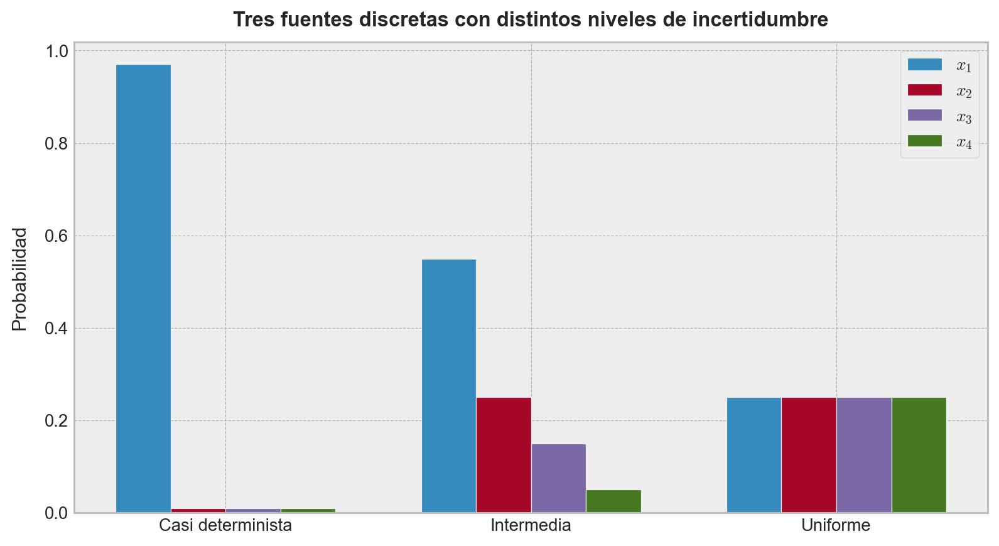
Y ahora comparemos sus entropías:
fig, ax = plt.subplots(figsize=(9, 4))
ax.bar(
entropy_df["Fuente"],
entropy_df["Entropía [bits]"],
color="firebrick",
)
ax.set_ylabel(
"Entropía [bits]",
fontsize=12,
labelpad=10
)
ax.set_title(
"La entropía aumenta cuando la distribución se vuelve más uniforme",
fontsize=13,
fontweight="bold",
pad=10
)
plt.tight_layout()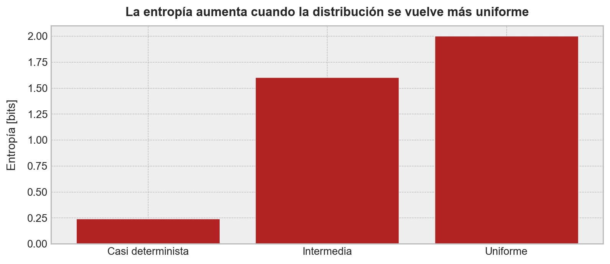
El resultado confirma la intuición: la fuente casi determinista tiene baja entropía, porque casi siempre emite el mismo mensaje. La fuente uniforme, por otro lado, alcanza la máxima entropía posible para cuatro mensajes, igual a
\[ \log_{2}(4)=2\ \mathrm{bits} \tag{3.9} \]
La fuente intermedia queda entre ambos extremos. No es completamente predecible, pero tampoco alcanza la incertidumbre máxima de una fuente uniforme.
En el campo del procesamiento de lenguaje natural (o NLP, del inglés natural language processing), esta interpretación es particularmente útil. Si \(X\) representa el próximo token emitido por una fuente textual, entonces \(p_k\) representa la probabilidad de observar el token \(x_k\). Un token extremadamente frecuente tiende a producir poca sorpresa. Un token raro, técnico o inesperado produce una mayor cantidad de información. Desde esta perspectiva, la entropía mide la incertidumbre promedio asociada al próximo token de una fuente de lenguaje. ◼︎
Entropía diferencial de variables aleatorias continuas.
La discusión anterior ha considerado fuentes discretas de información. Sin embargo, muchas variables aleatorias relevantes en estadística y aprendizaje automático son continuas. Ya sean mediciones físicas, señales, activaciones internas de una red neuronal, vectores latentes o representaciones vectoriales de tokens. Por ello, tiene sentido preguntarnos si existe una noción análoga a la entropía de Shannon para variables aleatorias continuas.
La respuesta es afirmativa, pero con una advertencia importante: La entropía diferencial no se comporta exactamente igual que la entropía discreta. En particular, no representa una cantidad absoluta de información en el mismo sentido que \(H(X)\), puede tomar valores negativos y depende de la escala con que midamos la variable aleatoria.
Formalizaremos esta idea en la siguiente definición.
Definición 3.3 – Entropía diferencial de una variable aleatoria continua: Sea \(X:\Omega \longrightarrow \mathbb{R}\) una variable aleatoria continua con función de densidad \(f_X(x)\). Se define la entropía diferencial de \(X\), denotada por \(h(X)\), como
\[ h(X):=-\int_{-\infty}^{+\infty}f_X(x)\log\left(f_X(x)\right)dx=-\mathrm{E}\left[\log\left(f_X(X)\right)\right] \tag{3.10} \]
Si el logaritmo es natural, \(h(X)\) se mide en nats. Si usamos logaritmo en base \(2\), se mide en bits diferenciales.
La expresión anterior se parece mucho a la entropía discreta definida en (3.5). Sin embargo, su interpretación es más delicada. Para entender por qué, conviene estudiar cómo aparece la entropía diferencial cuando discretizamos una variable continua.
Supongamos que \(X\) es una variable aleatoria continua con densidad \(f_X(x)\). Construyamos una versión cuantizada de \(X\) dividiendo la recta real en intervalos de ancho \(\Delta x\). Si el intervalo \(k\)-ésimo está dado por \([k\Delta x,(k+1)\Delta x)\), entonces la probabilidad de que \(X\) caiga en dicho intervalo es
\[ p_k^{\Delta}=\int_{k\Delta x}^{(k+1)\Delta x}f_X(x)dx \tag{3.11} \]
Si \(\Delta x\) es pequeño, podemos aproximar esta probabilidad mediante una suma de Riemann. Es decir, para algún punto representativo \(x_k\) del intervalo,
\[ p_k^{\Delta} \approx f_X(x_k)\Delta x \tag{3.12} \]
La entropía discreta de la variable cuantizada \(X^\Delta\) queda entonces dada por
\[ H^\Delta(X)=-\sum_{k}p_k^\Delta\log(p_k^\Delta) \tag{3.13} \]
Sustituyendo la aproximación \(p_k^\Delta\approx f_X(x_k)\Delta x\), obtenemos
\[ H^\Delta(X) \approx -\sum_k f_X(x_k)\Delta x \log\left(f_X(x_k)\Delta x\right). \tag{3.14} \]
Expandiendo el logaritmo,
\[ H^\Delta(X) \approx -\sum_k f_X(x_k)\Delta x \log\left(f_X(x_k)\right)- \sum_k f_X(x_k)\Delta x \log(\Delta x) \tag{3.15} \]
Como \(\log(\Delta x)\) no depende de \(k\), podemos escribir
\[ H^\Delta(X) \approx -\sum_k f_X(x_k)\Delta x \log\left(f_X(x_k)\right) -\log(\Delta x) \sum_k f_X(x_k)\Delta x \tag{3.16} \]
Al hacer \(\Delta x\rightarrow 0\), el primer término converge a la entropía diferencial y el segundo término converge a \(-\log(\Delta x)\), porque la suma de las probabilidades tiende a \(1\). Por tanto,
\[ H^\Delta(X)=h(X)-\log(\Delta x)+o(1), \qquad \Delta x\rightarrow 0 \tag{3.17} \]
Equivalentemente,
\[ h(X)=\lim_{\Delta x\rightarrow 0} \left[H^\Delta(X)+\log(\Delta x) \right] \tag{3.18} \]
Esta relación es fundamental. Nos dice que la entropía diferencial no es simplemente el límite de la entropía discreta cuando hacemos la discretización cada vez más fina. En efecto, cuando \(\Delta x\rightarrow 0\), se tiene que \(\log(\Delta x)\rightarrow -\infty\), de modo que \(-\log(\Delta x)\rightarrow +\infty\). Por lo tanto, la entropía discreta de la variable cuantizada crece sin cota a medida que exigimos mayor precisión.
La entropía diferencial aparece como el término finito que queda después de descontar la contribución asociada a la resolución de la medición. Esta es la razón profunda por la cual \(h(X)\) no debe interpretarse como una cantidad absoluta de información del mismo modo que \(H(X)\).
Cuando consideramos un vector aleatorio continuo \(\mathbf{X}=(X_1,\dots,X_p)\) con densidad conjunta \(f_{\mathbf{X}}(\mathbf{x})\), la entropía diferencial se define mediante
\[ h(\mathbf{X}) = -\int_{\mathbb{R}^{p}} f_{\mathbf{X}}(\mathbf{x}) \log\left(f_{\mathbf{X}}(\mathbf{x})\right)d\mathbf{x} = -\mathrm{E}\left[ \log\left(f_{\mathbf{X}}(\mathbf{X})\right) \right] \tag{3.19} \]
Aquí \(\mathbf{x}\in\mathbb{R}^{p}\) representa una realización del vector aleatorio \(\mathbf{X}\), y \(f_{\mathbf{X}}\) es su densidad conjunta.
Ejemplo 3.2 – Entropía diferencial de una variable exponencial: Consideremos una variable aleatoria exponencial \(X\sim\mathrm{Exp}(\lambda)\), cuya densidad es
\[ f_X(x) = \lambda e^{-\lambda x}, \qquad x\geq 0 \tag{3.20} \]
Usando la definición (3.10), obtenemos
\[ \begin{array}{lll} h(X) &=& \displaystyle -\int_0^{+\infty} \lambda e^{-\lambda x} \log\left(\lambda e^{-\lambda x}\right)dx \\[6pt] &=& \displaystyle -\int_0^{+\infty} \lambda e^{-\lambda x} \left[ \log(\lambda)-\lambda x \right]dx \\[6pt] &=& \displaystyle -\log(\lambda) \underbrace{ \int_0^{+\infty} \lambda e^{-\lambda x}dx }_{=1} + \lambda \underbrace{ \int_0^{+\infty} x\lambda e^{-\lambda x}dx }_{=\mathrm{E}[X]=1/\lambda} \\[6pt] &=& \displaystyle 1-\log(\lambda) \end{array} \tag{3.21} \]
Por lo tanto,
\[ h(X)=1-\log(\lambda) \tag{3.22} \]
Este resultado muestra inmediatamente una característica contraintuitiva de la entropía diferencial. Si \(\lambda>e\), entonces \(h(X)<0\). Esto no contradice la teoría: Simplemente refleja que \(h(X)\) no es una medida absoluta de sorpresa evento a evento, sino una cantidad dependiente de la escala y de la concentración de la densidad. ◼︎
La entropía diferencial satisface algunas propiedades importantes:
- (P1): Es invariante ante traslaciones. Si \(c\in\mathbb{R}\), entonces
\[ h(X+c)=h(X) \tag{3.23} \]
- (P2): No es invariante ante cambios de escala. Si \(a\neq 0\), entonces
\[ h(aX) = h(X)+\log|a| \tag{3.24} \]
Para un vector aleatorio continuo \(\mathbf{X}\in\mathbb{R}^{p}\) y una matriz invertible \(\mathbf{A}\in\mathbb{R}^{p\times p}\), se tiene
\[ h(\mathbf{A}\mathbf{X}) = h(\mathbf{X}) + \log|\det(\mathbf{A})| \tag{3.25} \]
- (P3): Si \(\mathbf{Y}=g(\mathbf{X})\), donde \(g:\mathbb{R}^{p}\rightarrow\mathbb{R}^{p}\) es una transformación diferenciable y biyectiva, entonces
\[ h(\mathbf{Y}) = h(\mathbf{X}) + \mathrm{E} \left[ \log \left| \det J_g(\mathbf{X}) \right| \right] \tag{3.26} \]
donde \(J_g(\mathbf{x})\) es la matriz Jacobiana de la transformación \(g\) evaluada en \(\mathbf{x}\). Si \(g\) no es biyectiva, esta igualdad ya no tiene por qué cumplirse, porque varios valores de \(\mathbf{X}\) pueden colapsar en una misma realización de \(\mathbf{Y}\).
(P4): Puede tomar valores negativos. A diferencia de la entropía discreta, no necesariamente se cumple que \(h(X)\geq 0\).
(P5): Depende de las unidades de medición. Cambiar de metros a centímetros, o reescalar un espacio vectorial, modifica el valor de \(h(X)\) por un término logarítmico. Por eso, la entropía diferencial sólo debe compararse entre variables expresadas en la misma escala o después de una normalización cuidadosamente justificada.
Estas propiedades hacen que la entropía diferencial sea menos intuitiva que la entropía discreta, pero no menos importante. En modelos probabilísticos continuos, estadística multivariada, representaciones latentes y aprendizaje profundo, \(h(X)\) mide la dispersión efectiva de una densidad continua, siempre teniendo presente que dicha dispersión está atada a la escala del espacio donde vive la variable aleatoria.
Ejemplo 3.3 – Entropía diferencial de representaciones continuas de tokens: En procesamiento de lenguaje natural moderno, las palabras (o tokens, xomo se denominan en la jerga técnica) no sólo se representan como símbolos discretos. También pueden representarse como vectores continuos, usualmente llamados embeddings. Un embedding busca ubicar tokens en un espacio vectorial de manera tal que tokens con usos o significados similares queden cerca entre sí.
En este contexto, una colección de embeddings puede interpretarse como una muestra de una variable aleatoria continua \(\mathbf{X}\in\mathbb{R}^{p}\). La entropía diferencial de esta variable no mide la incertidumbre discreta sobre qué token aparecerá, sino la dispersión geométrica de sus representaciones continuas.
Para fijar ideas, construiremos tres nubes sintéticas de embeddings bidimensionales:
- Una nube concentrada, que representa un lenguaje repetitivo o semánticamente estrecho.
- Una nube intermedia, que representa mayor variedad semántica.
- Una nube dispersa, que representa tokens más heterogéneos en su representación vectorial.
Aproximaremos cada nube mediante una distribución normal multivariada. Si
\[ \mathbf{X} \sim \mathcal{N}(\boldsymbol{\mu},\boldsymbol{\Sigma}) \tag{3.27} \]
entonces su entropía diferencial es
\[ h(\mathbf{X}) = \frac{1}{2} \log \left[ (2\pi e)^p \det(\boldsymbol{\Sigma}) \right] \tag{3.28} \]
Esta fórmula muestra que, para una distribución normal multivariada, la entropía diferencial crece con el volumen efectivo de la nube, medido por \(\det(\boldsymbol{\Sigma})\).
Vamos a implementar esto en Python de manera directa. Primero, definimos una función que nos permitirá calcular la entropía diferencial para un vector aleatorio normal multivariante:
def gaussian_differential_entropy(cov, base=np.e):
"""
Calcula la entropía diferencial de una normal multivariada N(mu, cov).
Parámetros:
-----------
cov : Matriz de covarianza de la distribución normal.
base : Base del logaritmo.
Retorna:
--------
h : Entropía diferencial de la distribución normal multivariada.
"""
cov = np.asarray(cov, dtype=float)
p = cov.shape[0]
sign, logdet = np.linalg.slogdet(cov)
if sign <= 0:
raise ValueError("La matriz de covarianza debe ser definida positiva.")
h_nats = 0.5 * (p * np.log(2 * np.pi * np.e) + logdet)
return h_nats / np.log(base)A continuación, definimos las fuentes de información de interés:
# Semilla para reproducibilidad.
rng = np.random.default_rng(2026)
# Medias de los grupos.
mu = np.array([0.0, 0.0])
# Matrices de covarianza para tres escenarios.
cov_concentrada = np.array([
[0.08, 0.02],
[0.02, 0.05]
])
cov_intermedia = np.array([
[0.35, 0.10],
[0.10, 0.25]
])
cov_dispersa = np.array([
[1.10, 0.35],
[0.35, 0.90]
])Luego simulamos los embeddings de texto y calculamos sus entropías diferenciales:
# Simulamos embeddings.
n_tokens = 250
embeddings = {
"Lenguaje concentrado": rng.multivariate_normal(mu, cov_concentrada, n_tokens),
"Lenguaje intermedio": rng.multivariate_normal(mu, cov_intermedia, n_tokens),
"Lenguaje disperso": rng.multivariate_normal(mu, cov_dispersa, n_tokens),
}
# Entropías teóricas bajo aproximación Gaussiana.
embedding_entropy_rows = []
for name, X_emb in embeddings.items():
cov_hat = np.cov(X_emb, rowvar=False)
h_bits = gaussian_differential_entropy(cov_hat, base=2)
embedding_entropy_rows.append({
"Escenario": name,
"Entropía diferencial [bits]": h_bits,
"det(cov)": np.linalg.det(cov_hat)
})
embedding_entropy_df = pd.DataFrame(embedding_entropy_rows)
embedding_entropy_df| Escenario | Entropía diferencial [bits] | det(cov) | |
|---|---|---|---|
| 0 | Lenguaje concentrado | 0.167452 | 0.004324 |
| 1 | Lenguaje intermedio | 2.291639 | 0.082178 |
| 2 | Lenguaje disperso | 3.880749 | 0.743866 |
Finalmente, visualizamos sus representaciones:
fig, ax = plt.subplots(figsize=(9, 7))
for name, X_emb in embeddings.items():
ax.scatter(
X_emb[:, 0],
X_emb[:, 1],
s=24,
alpha=0.70,
label=name
)
ax.set_title(
"Representaciones continuas de tokens bajo distintos niveles de dispersión",
fontsize=13,
fontweight="bold",
pad=10
)
ax.set_xlabel(r"Dimensión latente $z_1$", fontsize=12, labelpad=10)
ax.set_ylabel(r"Dimensión latente $z_2$", fontsize=12, labelpad=10)
ax.legend(loc="best", frameon=True)
plt.tight_layout()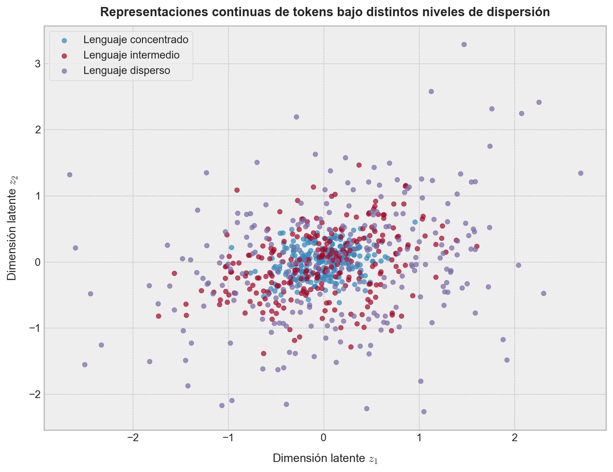
Y también graficamos sus entropías diferenciales:
fig, ax = plt.subplots(figsize=(9, 4))
ax.bar(
embedding_entropy_df["Escenario"],
embedding_entropy_df["Entropía diferencial [bits]"],
color="firebrick"
)
ax.set_title(
"Entropía diferencial aproximada de las nubes de embeddings",
fontsize=13,
fontweight="bold",
pad=10
)
ax.set_ylabel(
"Entropía diferencial [bits]",
fontsize=12,
labelpad=10
)
ax.tick_params(axis="x", rotation=0)
plt.tight_layout()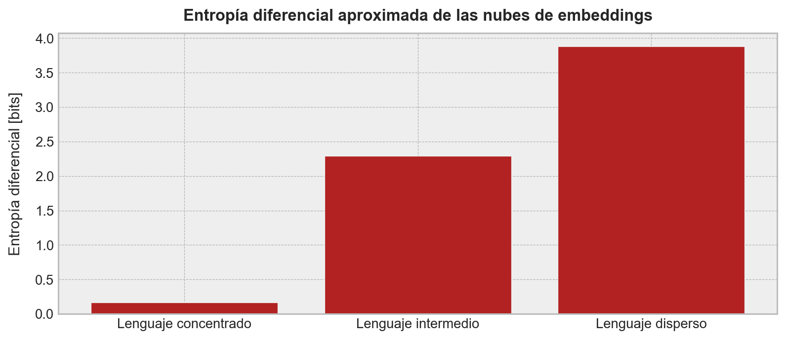
El patrón es el esperado: Una nube más concentrada tiene menor entropía diferencial, mientras que una nube más dispersa tiene mayor entropía diferencial. En una lectura propia de NLP, esto no significa que el vocabulario discreto tenga más o menos entropía de Shannon, sino que las representaciones continuas de los tokens ocupan un mayor o menor volumen efectivo en el espacio latente.
Ahora mostremos explícitamente la dependencia de escala. Tomemos la nube intermedia y reescalémosla por un factor \(a=3\). Conforme la ecuación (3.25), como estamos en dimensión \(p=2\), se debe cumplir
\[ h(a\mathbf{X})=h(\mathbf{X})+p\log(a) \tag{3.29} \]
En Python tenemos:
# Reescalamiento de embeddings.
a = 3.0
X_mid = embeddings["Lenguaje intermedio"]
X_mid_scaled = a * X_mid
cov_mid = np.cov(X_mid, rowvar=False)
cov_mid_scaled = np.cov(X_mid_scaled, rowvar=False)
h_mid = gaussian_differential_entropy(cov_mid, base=2)
h_mid_scaled = gaussian_differential_entropy(cov_mid_scaled, base=2)
scale_effect_df = pd.DataFrame({
"Caso": ["Original", "Reescalado por a=3"],
"Entropía diferencial [bits]": [h_mid, h_mid_scaled]
})
scale_effect_df| Caso | Entropía diferencial [bits] | |
|---|---|---|
| 0 | Original | 2.291639 |
| 1 | Reescalado por a=3 | 5.461564 |
Ahora visualizamos el efecto del reescalamiento:
fig, ax = plt.subplots(figsize=(9, 6))
ax.scatter(
X_mid[:, 0],
X_mid[:, 1],
s=24,
alpha=0.70,
label="Original"
)
ax.scatter(
X_mid_scaled[:, 0],
X_mid_scaled[:, 1],
s=24,
alpha=0.45,
label="Reescalado por a=3"
)
ax.set_title(
"La entropía diferencial cambia al reescalar el espacio de embeddings",
fontsize=13,
fontweight="bold",
pad=10
)
ax.set_xlabel(r"Dimensión latente $z_1$", fontsize=12, labelpad=10)
ax.set_ylabel(r"Dimensión latente $z_2$", fontsize=12, labelpad=10)
ax.legend(loc="best", frameon=True)
plt.tight_layout()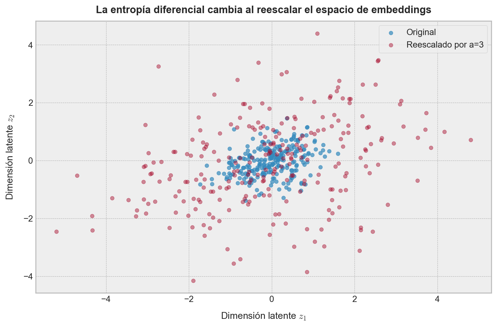
Este último experimento resulta súper importante. El contenido semántico relativo de los puntos no cambió: Las distancias relativas entre tokens se preservaron bajo el reescalamiento. Sin embargo, la entropía diferencial sí cambió, porque el volumen geométrico ocupado por la distribución aumentó.
Por lo tanto, en NLP debemos interpretar la entropía diferencial de embeddings con cuidado. Puede ser útil para comparar dispersión geométrica dentro de un mismo espacio latente, bajo la misma normalización y la misma métrica. Pero no debe confundirse con la entropía discreta de una fuente de tokens. La primera mide volumen en un espacio continuo; la segunda mide incertidumbre sobre símbolos. Ambas nociones están relacionadas por la idea general de incertidumbre, pero operan sobre objetos matemáticos distintos. ◼︎
Principio de máxima entropía.
Supongamos que deseamos estudiar un sistema estocástico con un conjunto conocido de estados posibles, pero con probabilidades de ocurrencia desconocidas. En muchos problemas reales no conocemos la distribución completa que gobierna dichos estados, aunque sí disponemos de información parcial: Una media, una varianza, una cota, una frecuencia esperada, una proporción agregada o alguna restricción física u operacional.
Un ejemplo aplicado aparece en el funcionamiento de un molino semiautógeno (SAG) en una planta de procesamiento de mineral. Estos molinos se caracterizan por variables de control como potencia, velocidad de rotación, tonelaje alimentado y presión sobre descansos. A medida que el molino opera, sus revestimientos interiores se desgastan por la acción abrasiva del mineral y los medios de molienda, lo que modifica progresivamente la presión de carga. En ese contexto, podríamos desconocer la distribución completa de la presión, pero sí conocer algunas restricciones razonables: Su rango físico admisible, su valor medio aproximado, su tendencia decreciente durante una campaña de revestimientos o su varianza esperada bajo cierto tipo de mineral.
Este tipo de información parcial se denomina conocimiento a priori. El problema es que, en general, existen infinitas distribuciones de probabilidad compatibles con un mismo conjunto de restricciones. Por lo tanto, surge una pregunta natural: ¿Cuál de todas esas distribuciones deberíamos escoger?
El principio de máxima entropía entrega una respuesta a esta pregunta. La idea central es que, entre todas las distribuciones compatibles con la información disponible, debemos escoger aquella que introduzca la menor cantidad posible de supuestos adicionales. En otras palabras, debemos escoger la distribución más incierta, o menos informativa, entre todas las que respetan las restricciones conocidas.
TipTeorema 3.1 – Principio de máxima entropía
Consideremos un sistema con un conjunto conocido de estados posibles y un conjunto incompleto de información a priori expresado mediante restricciones sobre su distribución de probabilidad. Cualquier inferencia estadística que queramos realizar sobre dicho sistema debe basarse en la distribución de probabilidad con máxima entropía entre todas las distribuciones que satisfacen tales restricciones.
La fuerza conceptual del principio es que transforma el problema de inferencia en un problema de optimización restringida. No estamos escogiendo la distribución que “parece más bonita” ni la que resulta más cómoda algebraicamente, sino aquella que maximiza la incertidumbre restante después de imponer todo lo que efectivamente sabemos.
Para formalizar esta idea, consideremos una variable aleatoria continua \(X\) con densidad desconocida \(f_X\). Queremos maximizar su entropía diferencial
\[ h(X) = -\int_{-\infty}^{+\infty} f_X(x)\log(f_X(x))dx \tag{3.30} \]
La maximización se realiza sobre el espacio de densidades admisibles \(f_X\), sujetas a tres tipos de restricciones:
- \(f_X(x)\geq 0\), para todo \(x\in\mathbb{R}\).
- \(\int_{-\infty}^{+\infty}f_X(x)dx=1\).
- Conocemos \(m\) momentos generalizados del tipo \(\mathrm{E}[g_i(X)]=\alpha_i\), para \(i=1,\dots,m\)
Por lo tanto, el problema variacional de máxima entropía puede escribirse como
\[ \begin{array}{ll} \displaystyle \max_{f_X} & \displaystyle -\int_{-\infty}^{+\infty} f_X(x)\log(f_X(x))dx \\[8pt] \mathrm{s.a.} & \displaystyle f_X(x)\geq 0, \qquad \forall x\in\mathbb{R}, \\[6pt] & \displaystyle \int_{-\infty}^{+\infty}f_X(x)dx=1, \\[8pt] & \displaystyle \int_{-\infty}^{+\infty} f_X(x)g_i(x)dx = \alpha_i, \qquad i=1,\dots,m \end{array} \tag{3.31} \]
Para resolver formalmente este problema, introducimos multiplicadores de Lagrange. Ignorando por el momento la restricción de no negatividad, y buscando soluciones interiores con \(f_X(x)>0\), el funcional Lagrangiano puede escribirse como
\[ \begin{array}{lll} \mathcal{L}(f_X,\lambda_0,\lambda_1,\dots,\lambda_m) &=& \displaystyle -\int_{-\infty}^{+\infty} f_X(x)\log(f_X(x))dx \\[8pt] && \displaystyle + \lambda_0 \left[ \int_{-\infty}^{+\infty}f_X(x)dx-1 \right] \\[8pt] && \displaystyle + \sum_{i=1}^{m} \lambda_i \left[ \int_{-\infty}^{+\infty} f_X(x)g_i(x)dx - \alpha_i \right] \end{array} \tag{3.32} \]
La condición de primer orden se obtiene anulando la derivada funcional respecto de \(f_X(x)\):
\[ \frac{\delta \mathcal{L}}{\delta f_X(x)} = -1-\log(f_X(x)) + \lambda_0 + \sum_{i=1}^{m}\lambda_i g_i(x) = 0 \tag{3.33} \]
Despejando \(f_X(x)\), se obtiene
\[ f_X^{\star}(x) = \exp \left( \lambda_0-1+ \sum_{i=1}^{m}\lambda_i g_i(x) \right) \tag{3.34} \]
Equivalentemente, podemos escribir
\[ f_X^{\star}(x) = \frac{1}{Z(\boldsymbol{\lambda})} \exp \left( \sum_{i=1}^{m}\lambda_i g_i(x) \right) \tag{3.35} \]
donde \(Z(\boldsymbol{\lambda})\) es una constante de normalización, también llamada función de partición, definida implícitamente para que la densidad integre uno.
La ecuación (3.35) es extremadamente importante: muestra que las distribuciones de máxima entropía bajo restricciones de momentos pertenecen a una familia exponencial. Las funciones \(g_i(x)\) codifican las estadísticas conocidas del sistema, mientras que los multiplicadores \(\lambda_i\) se escogen para que las restricciones \(\mathrm{E}[g_i(X)]=\alpha_i\) se satisfagan exactamente.
Ejemplo 3.4 – El caso de la distribución normal unidimensional: Supongamos que el conocimiento a priori disponible para una variable aleatoria continua \(X\) consiste en un valor central \(\mu\) y una varianza \(\sigma^2\). Equivalentemente, conocemos el momento cuadrático centrado
\[ \int_{-\infty}^{+\infty} (x-\mu)^2 f_X(x)dx = \sigma^2 \tag{3.36} \]
En este caso, la restricción informativa está dada por
\[ g_1(x)=(x-\mu)^2, \qquad \alpha_1=\sigma^2 \tag{3.37} \]
Al aplicar la forma general (3.34), obtenemos una densidad de la forma
\[ f_X^{\star}(x) = \exp \left( \lambda_0-1+\lambda_1(x-\mu)^2 \right) \tag{3.38} \]
Para que esta función sea integrable en toda la recta real, necesariamente debe cumplirse que \(\lambda_1<0\). Al imponer las restricciones de normalización y varianza, se obtiene
\[ \lambda_1 = -\frac{1}{2\sigma^2}, \qquad \lambda_0 = 1-\frac{1}{2}\log(2\pi\sigma^2) \tag{3.39} \]
Sustituyendo estos valores en (3.38), resulta
\[ f_X^{\star}(x) = \frac{1}{\sqrt{2\pi}\sigma} \exp \left[ -\frac{(x-\mu)^2}{2\sigma^2} \right] \tag{3.40} \]
Reconocemos inmediatamente esta expresión como la densidad de una variable aleatoria Gaussiana \(X\sim\mathcal{N}(\mu,\sigma^2)\).
La entropía diferencial máxima correspondiente es
\[ h(X) = \frac{1}{2} \log(2\pi e\sigma^2) = \frac{1}{2} \left[ 1+\log(2\pi\sigma^2) \right] \tag{3.41} \]
Este resultado tiene una interpretación profunda: entre todas las variables aleatorias continuas con varianza fija \(\sigma^2\), la distribución Gaussiana es la que maximiza la entropía diferencial. Dicho de otra forma, si sólo conocemos la escala de dispersión de una variable continua y no sabemos nada más, la inferencia menos sesgada compatible con esa información es una distribución normal. ◼︎
Ejemplo 3.5 – El caso de la distribución Gaussiana multivariable: El resultado anterior se extiende naturalmente al caso multivariable. Sea \(\mathbf{X}\in\mathbb{R}^{m}\) un vector aleatorio continuo con media \(\boldsymbol{\mu}\) y matriz de covarianza \(\boldsymbol{\Sigma}\), donde \(\boldsymbol{\Sigma}\) es simétrica y definida positiva.
Entre todas las distribuciones continuas con media \(\boldsymbol{\mu}\) y covarianza \(\boldsymbol{\Sigma}\), la distribución que maximiza la entropía diferencial es la normal multivariable
\[ f_{\mathbf{X}}(\mathbf{x}) = \frac{1} {(2\pi)^{m/2}\sqrt{\det(\boldsymbol{\Sigma})}} \exp \left[ -\frac{1}{2} (\mathbf{x}-\boldsymbol{\mu})^{\top} \boldsymbol{\Sigma}^{-1} (\mathbf{x}-\boldsymbol{\mu}) \right] \tag{3.42} \]
Su entropía diferencial es
\[ h(\mathbf{X}) = \frac{1}{2} \log \left[ (2\pi e)^m \det(\boldsymbol{\Sigma}) \right] \tag{3.43} \]
Equivalentemente,
\[ h(\mathbf{X}) = \frac{1}{2} \left[ m(1+\log(2\pi)) + \log(\det(\boldsymbol{\Sigma})) \right] \tag{3.44} \]
La expresión anterior incluye al caso unidimensional como caso particular. Cuando \(m=1\), la matriz de covarianza se reduce a \(\boldsymbol{\Sigma}=\sigma^2\), y recuperamos la fórmula (3.41).
Este resultado explica por qué la distribución Gaussiana aparece de manera tan recurrente en estadística, aprendizaje automático y teoría de señales: no sólo es algebraicamente conveniente, sino que también representa la distribución de máxima incertidumbre compatible con información de primer y segundo orden. Si conocemos media y covarianza, pero nada más, la distribución normal multivariable es la elección menos informativa entre todas las distribuciones continuas posibles. ◼︎
Ejemplo 3.6 – Un modelo de máxima entropía para una distribución de próximos tokens: En procesamiento de lenguaje natural, una fuente textual puede modelarse como un mecanismo que emite tokens. Si estamos construyendo un modelo probabilístico para el próximo token, podríamos no conocer toda la distribución verdadera sobre el vocabulario, pero sí algunas restricciones agregadas.
Por ejemplo, supongamos que tenemos un vocabulario pequeño \(\mathcal{V}\) y sabemos que, en un corpus técnico, cierta proporción esperada de los tokens pertenece a un grupo semántico minero, mientras que otra proporción pertenece a un grupo asociado a analítica y modelamiento. El principio de máxima entropía nos permite construir la distribución menos sesgada sobre tokens que respeta exactamente esas proporciones esperadas.
Sea \(q(t)\) la probabilidad asignada al token \(t\in\mathcal{V}\). Consideremos dos funciones de características:
\[ \phi_1(t) = \mathbb{1}\{t\ \text{es un token minero}\}, \qquad \phi_2(t) = \mathbb{1}\{t\ \text{es un token analítico}\} \tag{3.45} \]
Supongamos que queremos imponer las restricciones
\[ \sum_{t\in\mathcal{V}}q(t)\phi_1(t)=\alpha_1, \qquad \sum_{t\in\mathcal{V}}q(t)\phi_2(t)=\alpha_2 \tag{3.46} \]
El problema de máxima entropía queda dado por
\[ \begin{array}{ll} \displaystyle \max_{q} & \displaystyle -\sum_{t\in\mathcal{V}}q(t)\log(q(t)) \\[8pt] \mathrm{s.a.} & \displaystyle \sum_{t\in\mathcal{V}}q(t)=1, \\[6pt] & \displaystyle q(t)\geq 0, \qquad \forall t\in\mathcal{V}, \\[6pt] & \displaystyle \sum_{t\in\mathcal{V}}q(t)\phi_j(t)=\alpha_j, \qquad j=1,2 \end{array} \tag{3.47} \]
Por el resultado general del principio de máxima entropía, la solución tiene forma logarítmica-lineal:
\[ q_{\boldsymbol{\lambda}}(t) = \frac{ \exp\left( \lambda_1\phi_1(t)+\lambda_2\phi_2(t) \right) } { Z(\boldsymbol{\lambda}) } \tag{3.48} \]
donde
\[ Z(\boldsymbol{\lambda}) = \sum_{t\in\mathcal{V}} \exp\left( \lambda_1\phi_1(t)+\lambda_2\phi_2(t) \right) \tag{3.49} \]
Los multiplicadores \(\lambda_1\) y \(\lambda_2\) se ajustan para que la distribución resultante cumpla las restricciones de esperanza. Esto muestra que los modelos de máxima entropía son, en esencia, modelos exponenciales o log-lineales sobre características.
Implementemos este ejemplo en Python con un ejemplo muy sencillo que mezcla tokens mineros con otros analíticos y otros sin relación:
from scipy.optimize import minimize# Vocabulario pequeño de ejemplo.
vocab = np.array([
"molino",
"mineral",
"planta",
"cobre",
"modelo",
"datos",
"red",
"poesía",
"guitarra",
"mar"
])Asociamos las características semánticas para estos tokens y las llevamos a un DataFrame para mostrarlas en pantalla:
# Definimos dos características semánticas simples.
is_mining = np.array([1, 1, 1, 1, 0, 0, 0, 0, 0, 0], dtype=float)
is_analytics = np.array([0, 0, 0, 0, 1, 1, 1, 0, 0, 0], dtype=float)
features_df = pd.DataFrame({
"Token": vocab,
"Token minero": is_mining.astype(int),
"Token analítico": is_analytics.astype(int)
})
features_df| Token | Token minero | Token analítico | |
|---|---|---|---|
| 0 | molino | 1 | 0 |
| 1 | mineral | 1 | 0 |
| 2 | planta | 1 | 0 |
| 3 | cobre | 1 | 0 |
| 4 | modelo | 0 | 1 |
| 5 | datos | 0 | 1 |
| 6 | red | 0 | 1 |
| 7 | poesía | 0 | 0 |
| 8 | guitarra | 0 | 0 |
| 9 | mar | 0 | 0 |
Ahora construimos una matriz con los datos de entrada y definimos las restricciones del problema:
# Matriz de características.
F = np.column_stack([is_mining, is_analytics])
# Restricciones esperadas.
# Queremos que 55% de la masa esté en tokens mineros
# y 30% en tokens analíticos.
alpha = np.array([0.55, 0.30])Ahora llevamos nuestras ecuaciones a funciones adecuadas:
def softmax(scores):
"""
Calcula softmax de manera numéricamente estable.
"""
scores = np.asarray(scores, dtype=float)
c = np.max(scores)
exp_scores = np.exp(scores - c)
return exp_scores / exp_scores.sum()
def maxent_distribution(lam, F):
"""
Distribución de máxima entropía inducida por los multiplicadores lam.
q_lam(t) ∝ exp(lam^T phi(t)).
"""
scores = F @ lam
return softmax(scores)
def maxent_dual_objective(lam, F, alpha):
"""
Objetivo dual convexo del problema de máxima entropía:
A(lam) - lam^T alpha,
donde A(lam)=log(sum_t exp(lam^T phi(t))).
"""
scores = F @ lam
c = np.max(scores)
log_partition = c + np.log(np.sum(np.exp(scores - c)))
return log_partition - lam @ alpha
def maxent_dual_gradient(lam, F, alpha):
"""
Gradiente del objetivo dual:
E_q[phi(T)] - alpha.
"""
q = maxent_distribution(lam, F)
expected_features = F.T @ q
return expected_features - alphaY resolvemos el problema aprovechando el framework de optimización de Scipy:
# Ajustamos los multiplicadores de Lagrange.
result = minimize(
fun=maxent_dual_objective,
x0=np.zeros(F.shape[1]),
args=(F, alpha),
jac=maxent_dual_gradient,
method="BFGS"
)
lambda_hat = result.x
q_maxent = maxent_distribution(lambda_hat, F)
lambda_hatarray([1.01159999, 0.69314725])Mostramos nuestros resultamos y chequeamos:
# Distribución uniforme de referencia.
q_uniform = np.ones(len(vocab)) / len(vocab)
# Tabla comparativa.
maxent_df = pd.DataFrame({
"Token": vocab,
"Token minero": is_mining.astype(int),
"Token analítico": is_analytics.astype(int),
"q uniforme": q_uniform,
"q máxima entropía": q_maxent
})
maxent_df| Token | Token minero | Token analítico | q uniforme | q máxima entropía | |
|---|---|---|---|---|---|
| 0 | molino | 1 | 0 | 0.1 | 0.1375 |
| 1 | mineral | 1 | 0 | 0.1 | 0.1375 |
| 2 | planta | 1 | 0 | 0.1 | 0.1375 |
| 3 | cobre | 1 | 0 | 0.1 | 0.1375 |
| 4 | modelo | 0 | 1 | 0.1 | 0.1000 |
| 5 | datos | 0 | 1 | 0.1 | 0.1000 |
| 6 | red | 0 | 1 | 0.1 | 0.1000 |
| 7 | poesía | 0 | 0 | 0.1 | 0.0500 |
| 8 | guitarra | 0 | 0 | 0.1 | 0.0500 |
| 9 | mar | 0 | 0 | 0.1 | 0.0500 |
# Verificamos que las restricciones se cumplan.
constraint_check_df = pd.DataFrame({
"Restricción": ["Masa esperada minera", "Masa esperada analítica"],
"Valor objetivo": alpha,
"Valor MaxEnt": F.T @ q_maxent,
"Valor uniforme": F.T @ q_uniform
})
constraint_check_df| Restricción | Valor objetivo | Valor MaxEnt | Valor uniforme | |
|---|---|---|---|---|
| 0 | Masa esperada minera | 0.55 | 0.55 | 0.4 |
| 1 | Masa esperada analítica | 0.30 | 0.30 | 0.3 |
# Entropías de ambas distribuciones.
entropy_comparison_df = pd.DataFrame({
"Distribución": ["Uniforme", "Máxima entropía restringida"],
"Entropía [bits]": [
entropy_discrete(q_uniform, base=2),
entropy_discrete(q_maxent, base=2)
]
})
entropy_comparison_df| Distribución | Entropía [bits] | |
|---|---|---|
| 0 | Uniforme | 3.321928 |
| 1 | Máxima entropía restringida | 3.219241 |
Visualicemos primero la distribución resultante:
fig, ax = plt.subplots(figsize=(9, 5))
x_pos = np.arange(len(vocab))
width = 0.36
ax.bar(
x_pos - width / 2,
q_uniform,
width=width,
label="Uniforme"
)
ax.bar(
x_pos + width / 2,
q_maxent,
width=width,
label="Máxima entropía restringida"
)
ax.set_xticks(x_pos)
ax.set_xticklabels(vocab, rotation=35, ha="right")
ax.set_ylabel(
"Probabilidad",
fontsize=12,
labelpad=10
)
ax.set_title(
"Distribución MaxEnt sobre próximos tokens bajo restricciones semánticas",
fontsize=13,
fontweight="bold",
pad=10
)
ax.legend(loc="best", frameon=True)
plt.tight_layout()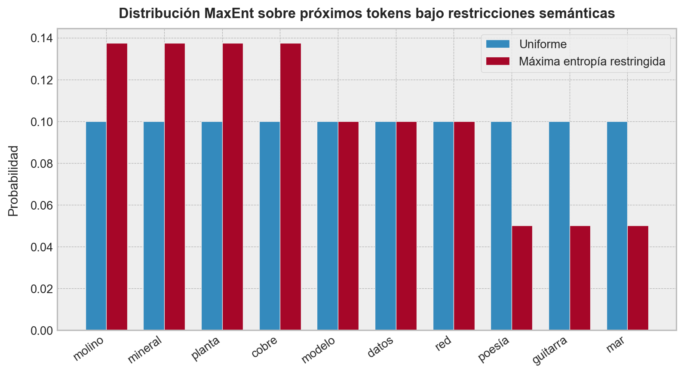
Ahora visualicemos el cumplimiento de restricciones:
fig, ax = plt.subplots(figsize=(9, 5))
x_pos = np.arange(len(alpha))
width = 0.36
ax.bar(
x_pos - width / 2,
constraint_check_df["Valor objetivo"],
width=width,
label="Objetivo"
)
ax.bar(
x_pos + width / 2,
constraint_check_df["Valor MaxEnt"],
width=width,
label="MaxEnt"
)
ax.set_xticks(x_pos)
ax.set_xticklabels(constraint_check_df["Restricción"])
ax.set_ylabel(
"Valor esperado",
fontsize=12,
labelpad=10
)
ax.set_title(
"La distribución MaxEnt satisface las restricciones esperadas",
fontsize=13,
fontweight="bold",
pad=10
)
ax.legend(loc="best", frameon=True)
plt.tight_layout()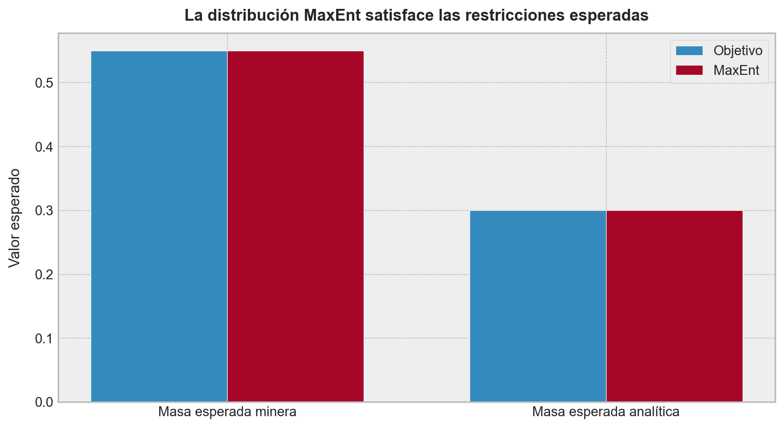
Finalmente, comparemos las entropías:
fig, ax = plt.subplots(figsize=(9, 5))
ax.bar(
entropy_comparison_df["Distribución"],
entropy_comparison_df["Entropía [bits]"]
)
ax.set_ylabel(
"Entropía [bits]",
fontsize=12,
labelpad=10
)
ax.set_title(
"La máxima entropía restringida reduce incertidumbre sólo lo necesario",
fontsize=13,
fontweight="bold",
pad=10
)
plt.tight_layout()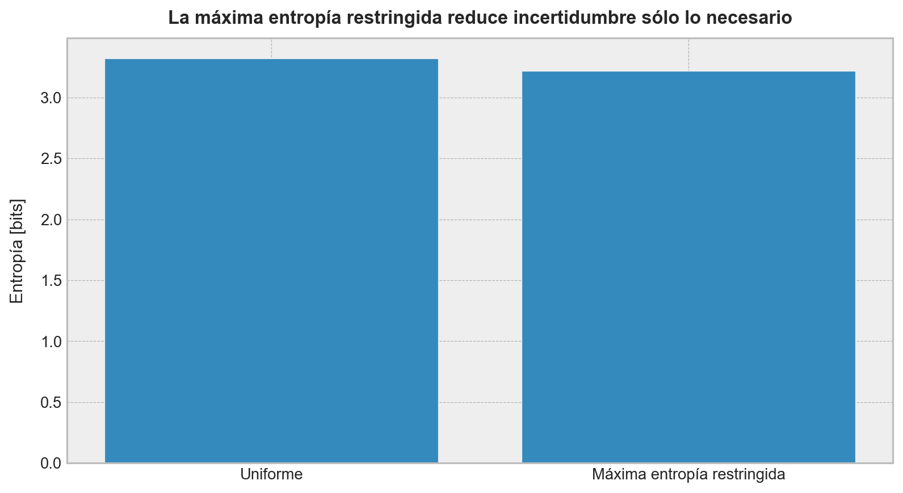
La distribución uniforme tiene la mayor entropía posible si no imponemos ninguna restricción. Sin embargo, no respeta el conocimiento a priori que hemos definido: Queremos que la masa esperada sobre tokens mineros sea \(0.55\), y que la masa esperada sobre tokens analíticos sea \(0.30\).
La distribución de máxima entropía restringida modifica la distribución uniforme sólo en la medida necesaria para satisfacer esas condiciones. Dentro de cada grupo de tokens que comparte las mismas características, asigna probabilidades iguales. Esto es exactamente lo que esperaríamos de una distribución que no introduce información adicional: distingue únicamente aquello que las restricciones obligan a distinguir.
Desde una perspectiva de NLP, este ejemplo captura la lógica de los modelos log-lineales de máxima entropía. Una distribución sobre tokens puede construirse a partir de características observables, como pertenencia a grupos semánticos, presencia de sufijos, etiquetas gramaticales, posición en una oración o contexto local. El modelo resultante no memoriza una distribución arbitraria, sino que escoge la distribución más incierta compatible con las estadísticas que exigimos preservar.
Este principio reaparece de forma moderna en modelos de lenguaje, clasificadores probabilísticos y capas de salida tipo softmax. En todos esos casos, se asignan puntajes a posibles tokens o clases, se normalizan mediante una función de partición y se obtiene una distribución de probabilidad. La diferencia es que, en modelos modernos, esas características y puntajes suelen aprenderse automáticamente a partir de grandes volúmenes de datos. ◼︎
Información mutua
Vamos a considerar ahora la incertidumbre asociada a un par de variables aleatorias \(X\) e \(Y\). El concepto que estudiaremos se denomina información mutua, y cuantifica cuánta información sobre una variable aleatoria se obtiene al observar otra.
Dicho de manera intuitiva, \(I(X;Y)\) mide cuánto se reduce la incertidumbre sobre \(Y\) cuando conocemos \(X\), o equivalentemente, cuánto se reduce la incertidumbre sobre \(X\) cuando conocemos \(Y\). Por esta razón, la información mutua no mide solamente correlación lineal. Es una medida mucho más general de dependencia estadística, porque compara la distribución conjunta \(p_{XY}\) con el producto de las distribuciones marginales \(p_Xp_Y\).
Si \(X\) e \(Y\) fueran independientes, entonces observar \(X\) no modificaría nuestra incertidumbre sobre \(Y\). En tal caso, la distribución conjunta se factorizaría como \(p_{XY}(x,y)=p_X(x)p_Y(y)\), y la información mutua sería igual a cero. Por el contrario, mientras más se aleje la distribución conjunta de esa factorización independiente, mayor será la información compartida por ambas variables.
En aprendizaje automático, la información mutua aparece en selección de atributos, reducción de dimensionalidad, aprendizaje de representaciones, análisis de dependencia, inferencia probabilística y procesamiento de lenguaje natural. En particular, en aprendizaje supervisado suele estar estrechamente relacionada con la noción de ganancia de información, porque una variable predictora es útil si reduce la incertidumbre sobre la variable objetivo.
A fin de formalizar este concepto, enunciaremos la siguiente definición.
Definición 3.4 – Información mutua entre dos variables aleatorias discretas: Sean \(X\) e \(Y\) dos variables aleatorias discretas con soportes finitos \(\mathcal{X}\) y \(\mathcal{Y}\), respectivamente. Si \(p_{XY}(x,y)\) denota la función conjunta de masa de probabilidad, y \(p_X(x)\), \(p_Y(y)\) sus marginales, se define la información mutua entre \(X\) e \(Y\), denotada por \(I(X;Y)\), como
\[ I(X;Y) = \sum_{x\in \mathcal{X}} \sum_{y\in \mathcal{Y}} p_{XY}(x,y) \log \left( \frac{p_{XY}(x,y)} {p_X(x)p_Y(y)} \right) \tag{3.50} \]
La suma anterior debe entenderse sobre los pares \((x,y)\) tales que \(p_{XY}(x,y)>0\). Además, se asume la convención usual según la cual los eventos de probabilidad nula no contribuyen a la suma.
Para variables aleatorias continuas absolutamente continuas, la información mutua se define de manera análoga mediante densidades. Si \(X\) e \(Y\) tienen densidad conjunta \(f_{XY}(x,y)\) y densidades marginales \(f_X(x)\) y \(f_Y(y)\), entonces
\[ I(X;Y) = \int_{-\infty}^{+\infty} \int_{-\infty}^{+\infty} f_{XY}(x,y) \log \left( \frac{f_{XY}(x,y)} {f_X(x)f_Y(y)} \right) dxdy \tag{3.51} \]
Esta definición revela una interpretación muy importante: la información mutua mide cuánto difiere la distribución conjunta de \(X\) e \(Y\) respecto de la distribución conjunta que tendrían si fueran independientes. En efecto, si \(X\) e \(Y\) son independientes, entonces
\[ f_{XY}(x,y)=f_X(x)f_Y(y) \tag{3.52} \]
y por tanto
\[ \log \left( \frac{f_{XY}(x,y)} {f_X(x)f_Y(y)} \right) = \log(1) = 0 \tag{3.53} \]
De esta manera, \(I(X;Y)=0\) cuando \(X\) e \(Y\) son independientes.
Es importante hacer una precisión. Si \(X\) e \(Y\) son variables discretas y una de ellas determina completamente a la otra, entonces la información mutua puede llegar a coincidir con la entropía de una de las variables. Por ejemplo, si \(Y=g(X)\) y \(g\) es invertible sobre el soporte discreto considerado, entonces \(I(X;Y)=H(X)=H(Y)\). En el caso continuo, una relación determinística exacta puede producir distribuciones conjuntas singulares, y la información mutua puede volverse infinita. Por esa razón, el caso continuo debe tratarse con mayor cuidado técnico.
La información mutua satisface las siguientes propiedades:
- (P1): No negatividad: \(I(X;Y)\geq 0\).
- (P2): Simetría: \(I(X;Y)=I(Y;X)\).
- (P3): Independencia: \(I(X;Y)=0\) si \(X\) e \(Y\) son independientes.
- (P4): Relación con entropías: puede escribirse como una diferencia entre incertidumbre inicial e incertidumbre remanente.
Para desarrollar la última propiedad, conviene introducir primero las nociones de entropía conjunta y entropía condicional.
Si \(\mathbf{X}=(X_1,\dots,X_n)\) es un vector aleatorio discreto, con soporte producto \(\mathcal{X}_1\times\cdots\times\mathcal{X}_n\), su entropía conjunta se define como
\[ H(\mathbf{X}) = - \sum_{x_1\in\mathcal{X}_1} \cdots \sum_{x_n\in\mathcal{X}_n} p_{\mathbf{X}}(x_1,\dots,x_n) \log \left( p_{\mathbf{X}}(x_1,\dots,x_n) \right) \tag{3.54} \]
En el caso bidimensional \(\mathbf{X}=(X,Y)\), esto se reduce a
\[ H(X,Y) = - \sum_{x\in\mathcal{X}} \sum_{y\in\mathcal{Y}} p_{XY}(x,y) \log \left( p_{XY}(x,y) \right) \tag{3.55} \]
La entropía conjunta satisface dos desigualdades importantes. Primero,
\[ H(X_1,\dots,X_n) \geq \max_{1\leq k\leq n} H(X_k) \tag{3.56} \]
Segundo, es subaditiva:
\[ H(X_1,\dots,X_n) \leq H(X_1)+\cdots+H(X_n) \tag{3.57} \]
La primera desigualdad señala que la incertidumbre conjunta no puede ser menor que la incertidumbre de cualquiera de sus componentes. La segunda señala que la incertidumbre conjunta no puede exceder la suma de las incertidumbres individuales. Si las variables son independientes, entonces la desigualdad (3.57) se vuelve igualdad.
Por otro lado, para un par de variables aleatorias discretas \(X\) e \(Y\), se define la entropía condicional de \(Y\) dado \(X\) como
\[ H(Y|X) = - \sum_{x\in\mathcal{X}} \sum_{y\in\mathcal{Y}} p_{XY}(x,y) \log \left( p_{Y|X}(y|x) \right) \tag{3.58} \]
Como
\[ p_{Y|X}(y|x) = \frac{p_{XY}(x,y)}{p_X(x)}, \qquad p_X(x)>0 \tag{3.59} \]
también podemos escribir
\[ H(Y|X) = - \sum_{x\in\mathcal{X}} \sum_{y\in\mathcal{Y}} p_{XY}(x,y) \log \left( \frac{p_{XY}(x,y)} {p_X(x)} \right) \tag{3.60} \]
La entropía condicional \(H(Y|X)\) representa la incertidumbre promedio que permanece sobre \(Y\) después de observar \(X\). En consecuencia, si observar \(X\) ayuda mucho a predecir \(Y\), entonces \(H(Y|X)\) será pequeña. Si observar \(X\) no ayuda en absoluto, entonces \(H(Y|X)=H(Y)\).
Con estas definiciones, la información mutua puede expresarse de varias maneras equivalentes:
\[ \begin{array}{lll} I(X;Y) &=& H(X)-H(X|Y) \\[4pt] &=& H(Y)-H(Y|X) \\[4pt] &=& H(X)+H(Y)-H(X,Y) \\[4pt] &=& H(X,Y)-H(X|Y)-H(Y|X) \end{array} \tag{3.61} \]
La segunda identidad es particularmente intuitiva:
\[ I(X;Y) = H(Y)-H(Y|X) \tag{3.62} \]
Es decir, la información mutua es la reducción de incertidumbre sobre \(Y\) que se produce al observar \(X\).
Podemos verificar esta identidad algebraicamente a partir de la definición (3.50):
\[ \begin{array}{lll} I(X;Y) &=& \displaystyle \sum_{x\in\mathcal{X}} \sum_{y\in\mathcal{Y}} p_{XY}(x,y) \log \left( \frac{p_{XY}(x,y)} {p_X(x)p_Y(y)} \right) \\[8pt] &=& \displaystyle \sum_{x\in\mathcal{X}} \sum_{y\in\mathcal{Y}} p_{XY}(x,y) \left[ \log \left( \frac{p_{XY}(x,y)}{p_X(x)} \right) - \log(p_Y(y)) \right] \\[8pt] &=& \displaystyle \sum_{x\in\mathcal{X}} \sum_{y\in\mathcal{Y}} p_{XY}(x,y) \log(p_{Y|X}(y|x)) - \sum_{x\in\mathcal{X}} \sum_{y\in\mathcal{Y}} p_{XY}(x,y) \log(p_Y(y)) \\[8pt] &=& \displaystyle -H(Y|X) - \sum_{y\in\mathcal{Y}} \left[ \sum_{x\in\mathcal{X}}p_{XY}(x,y) \right] \log(p_Y(y)) \\[8pt] &=& \displaystyle -H(Y|X) - \sum_{y\in\mathcal{Y}} p_Y(y)\log(p_Y(y)) \\[8pt] &=& H(Y)-H(Y|X) \end{array} \tag{3.63} \]
Este resultado formaliza la intuición inicial: si \(H(Y)\) describe la incertidumbre total sobre \(Y\), entonces \(H(Y|X)\) describe la incertidumbre remanente sobre \(Y\) después de conocer \(X\). La diferencia entre ambas cantidades es precisamente la información que \(X\) aporta acerca de \(Y\).
Ejemplo 3.7 – Selección de atributos usando información mutua: Vamos a ilustrar una aplicación simple del concepto de información mutua usando Scikit-Learn. En aprendizaje supervisado, una tarea central consiste en seleccionar las variables de entrada que mejor explican una variable de respuesta. A esta tarea se le denomina selección de atributos.
Supongamos que queremos construir un modelo para predecir una variable de respuesta \(Y\) a partir de tres variables de entrada \(X_1\), \(X_2\) y \(X_3\). A priori, no sabemos cuáles de estas variables son relevantes. Sin embargo, construiremos un ejemplo sintético donde
\[ Y = 2X_1 - \cos(3\pi X_2) + \frac{1}{2}\varepsilon, \qquad \varepsilon\sim\mathcal{N}(0,1) \tag{3.64} \]
En este diseño, \(Y\) depende linealmente de \(X_1\), no linealmente de \(X_2\), y no depende de \(X_3\). Por lo tanto, un buen criterio de selección debería detectar que \(X_1\) y \(X_2\) son relevantes, mientras que \(X_3\) debe ser descartada.
En Scikit-Learn, podemos estimar información mutua mediante mutual_info_regression() cuando \(Y\) es continua, y mediante mutual_info_classif() cuando \(Y\) es categórica. Estas funciones retornan estimaciones no negativas de información mutua. No están necesariamente acotadas por \(1\); si queremos interpretarlas como importancias relativas, podemos normalizarlas posteriormente.
from sklearn.feature_selection import mutual_info_regression# Semilla aleatoria para reproducibilidad.
rng = np.random.default_rng(42)
# Generamos tres variables explicativas.
X = rng.uniform(size=(1000, 3))
# Construimos la variable objetivo.
y = (
2 * X[:, 0]
- np.cos(3 * np.pi * X[:, 1])
+ 0.5 * rng.normal(loc=0, scale=1, size=1000)
)# Calculamos información mutua entre cada columna de X e y.
mi_raw = mutual_info_regression(
X=X,
y=y,
n_neighbors=3,
random_state=42
)
# Normalizamos sólo para visualizar importancia relativa.
mi_norm = mi_raw / np.max(mi_raw)
mi_df = pd.DataFrame({
"Variable": [r"$X_1$", r"$X_2$", r"$X_3$"],
"Información mutua estimada": mi_raw,
"Información mutua normalizada": mi_norm
})
mi_df| Variable | Información mutua estimada | Información mutua normalizada | |
|---|---|---|---|
| 0 | $X_1$ | 0.173004 | 0.509632 |
| 1 | $X_2$ | 0.339468 | 1.000000 |
| 2 | $X_3$ | 0.005356 | 0.015779 |
# Visualización de las relaciones entre cada variable y la respuesta.
fig, ax = plt.subplots(
nrows=1,
ncols=X.shape[1],
figsize=(9, 4),
sharey=True
)
for j in range(X.shape[1]):
ax[j].scatter(
X[:, j],
y,
s=20,
color="firebrick",
alpha=0.7
)
ax[j].set_xlabel(
fr"$X_{j+1}$",
fontsize=11,
labelpad=10
)
ax[j].set_title(
fr"$I(X_{j+1};Y)$ normalizada = {mi_norm[j]:.3f}",
fontsize=12,
pad=10
)
ax[0].set_ylabel(
r"$Y$",
rotation=0,
fontsize=11,
labelpad=15
)
plt.tight_layout()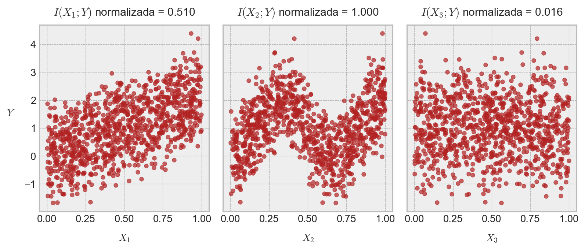
Podemos observar que la información mutua normalizada es alta para \(X_1\) y \(X_2\), mientras que es muy baja para \(X_3\). Este resultado es coherente con el diseño del experimento: \(X_1\) aporta información lineal sobre \(Y\), \(X_2\) aporta información no lineal, y \(X_3\) no aporta información relevante.
La ventaja de la información mutua sobre medidas puramente lineales es que puede detectar relaciones no lineales. Por eso es especialmente útil como criterio exploratorio de selección de atributos. ◼︎
Ejemplo 3.8 – Información mutua entre palabras consecutivas en frases completas: En procesamiento de lenguaje natural, una frase puede entenderse como una secuencia de variables aleatorias. Si \(W_t\) representa la palabra en la posición \(t\), entonces una pregunta natural es: ¿Cuánta información entrega la palabra actual sobre la palabra siguiente?
Esta pregunta se puede escribir como
\[ I(W_t;W_{t+1}) = \sum_{w\in\mathcal{V}} \sum_{v\in\mathcal{V}} p(w,v) \log \left( \frac{p(w,v)} {p(w)p(v)} \right) \tag{3.65} \]
donde \(p(w,v)\) es la probabilidad empírica de observar el bigrama \((w,v)\), mientras que \(p(w)\) y \(p(v)\) son las probabilidades marginales de observar cada palabra como palabra actual y palabra siguiente, respectivamente.
La intuición es clara: si las palabras consecutivas fueran independientes, entonces conocer \(W_t\) no ayudaría a anticipar \(W_{t+1}\). Pero en una lengua natural las palabras no aparecen en cualquier orden. Expresiones como “molino SAG”, “modelo predictivo”, “red neuronal”, “mineral duro” o “función objetivo” aparecen con mucha mayor frecuencia que combinaciones arbitrarias. Esa estructura secuencial produce información mutua positiva entre palabras consecutivas.
Trabajaremos con un pequeño corpus de frases completas, separadas en dominios técnicos y no técnicos:
import re
from collections import Countersentences = [
"el molino sag procesa mineral duro durante el turno de noche",
"el molino sag aumenta potencia cuando el mineral es competente",
"la planta ajusta el tonelaje cuando cambia la dureza del mineral",
"el chancador primario alimenta mineral hacia el stockpile intermedio",
"la correa transporta mineral desde el chancador hacia la planta",
"el modelo predictivo estima el tonelaje esperado del molino",
"la red neuronal aprende patrones no lineales desde los datos",
"el algoritmo optimiza la función objetivo con gradiente descendente",
"el modelo de lenguaje predice la siguiente palabra de una frase",
"la información mutua detecta dependencia entre variables del modelo",
"la guitarra acompaña una canción tranquila junto al mar",
"la poesía describe la noche lenta sobre la ciudad",
"el viajero observa la lluvia caer sobre el camino",
"la memoria guarda imágenes antiguas de la infancia",
"el silencio cubre la casa cuando termina la música",
]Primero definimos una función simple de tokenización. La idea no es construir un tokenizador industrial, sino generar un ejemplo claro y reproducible:
def tokenize(sentence):
"""
Tokenizador simple para frases en minúscula.
Conserva letras con tildes y elimina signos de puntuación.
"""
sentence = sentence.lower()
return re.findall(r"[a-záéíóúñ]+", sentence)
def extract_bigrams(sentences):
"""
Extrae bigramas (w_t, w_{t+1}) desde una lista de frases.
"""
bigrams = []
for sentence in sentences:
tokens = tokenize(sentence)
for i in range(len(tokens) - 1):
bigrams.append((tokens[i], tokens[i + 1]))
return bigramsConstruimos ahora la tabla empírica de bigramas:
bigrams = extract_bigrams(sentences)
bigram_counts = Counter(bigrams)
left_counts = Counter([w for w, _ in bigrams])
right_counts = Counter([v for _, v in bigrams])
n_bigrams = len(bigrams)
bigram_df = pd.DataFrame([
{
"w_t": w,
"w_t+1": v,
"conteo": c,
"p(w_t,w_t+1)": c / n_bigrams,
"p(w_t)": left_counts[w] / n_bigrams,
"p(w_t+1)": right_counts[v] / n_bigrams,
}
for (w, v), c in bigram_counts.items()
])
bigram_df.head()| w_t | w_t+1 | conteo | p(w_t,w_t+1) | p(w_t) | p(w_t+1) | |
|---|---|---|---|---|---|---|
| 0 | el | molino | 2 | 0.015625 | 0.117188 | 0.023438 |
| 1 | molino | sag | 2 | 0.015625 | 0.015625 | 0.015625 |
| 2 | sag | procesa | 1 | 0.007812 | 0.015625 | 0.007812 |
| 3 | procesa | mineral | 1 | 0.007812 | 0.007812 | 0.039062 |
| 4 | mineral | duro | 1 | 0.007812 | 0.031250 | 0.007812 |
Definimos ahora una función para calcular información mutua empírica desde una colección de bigramas:
def mutual_information_bigrams(bigrams, base=2):
"""
Calcula I(W_t; W_{t+1}) a partir de bigramas observados.
"""
bigram_counts = Counter(bigrams)
left_counts = Counter([w for w, _ in bigrams])
right_counts = Counter([v for _, v in bigrams])
n = len(bigrams)
mi = 0.0
for (w, v), c in bigram_counts.items():
p_wv = c / n
p_w = left_counts[w] / n
p_v = right_counts[v] / n
mi += p_wv * np.log(p_wv / (p_w * p_v)) / np.log(base)
return mimi_bigram = mutual_information_bigrams(bigrams, base=2)
print(f"I(W_t; W_(t+1)) = {mi_bigram:.3f} bits")I(W_t; W_(t+1)) = 4.898 bitsPara interpretar mejor este valor, comparemos contra un corpus artificial en que las palabras de cada frase son aleatoriamente reordenadas. Esto destruye buena parte de la estructura sintáctica y semántica local, aunque conserva aproximadamente el vocabulario de cada frase:
def shuffle_sentence_tokens(sentence, rng):
"""
Reordena aleatoriamente los tokens de una frase.
"""
tokens = tokenize(sentence)
shuffled = tokens.copy()
rng.shuffle(shuffled)
return " ".join(shuffled)
rng = np.random.default_rng(123)
shuffled_sentences = [
shuffle_sentence_tokens(sentence, rng)
for sentence in sentences
]
shuffled_bigrams = extract_bigrams(shuffled_sentences)
mi_bigram_shuffled = mutual_information_bigrams(shuffled_bigrams, base=2)
comparison_mi_sentences_df = pd.DataFrame({
"Corpus": ["Frases originales", "Frases con palabras reordenadas"],
"I(W_t; W_{t+1}) [bits]": [mi_bigram, mi_bigram_shuffled]
})
comparison_mi_sentences_df| Corpus | I(W_t; W_{t+1}) [bits] | |
|---|---|---|
| 0 | Frases originales | 4.897657 |
| 1 | Frases con palabras reordenadas | 4.690582 |
fig, ax = plt.subplots(figsize=(8, 4.5))
ax.bar(
comparison_mi_sentences_df["Corpus"],
comparison_mi_sentences_df["I(W_t; W_{t+1}) [bits]"],
color="firebrick"
)
ax.set_ylabel(
r"$I(W_t;W_{t+1})$ [bits]",
fontsize=12,
labelpad=10
)
ax.set_title(
"La información mutua captura estructura local en frases completas",
fontsize=13,
fontweight="bold",
pad=10
)
plt.tight_layout()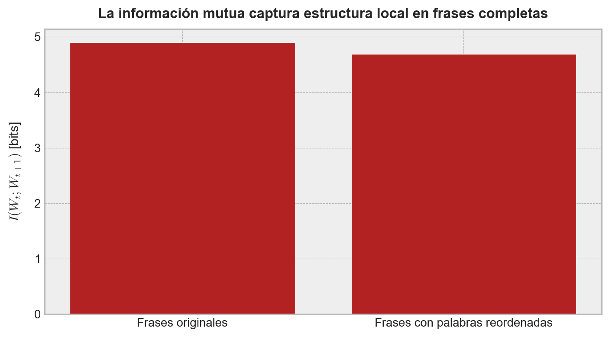
También podemos examinar qué bigramas tienen mayor asociación local mediante la información mutua puntual o PMI, definida como
\[ \mathrm{PMI}(w,v) = \log \left( \frac{p(w,v)} {p(w)p(v)} \right) \tag{3.66} \]
La PMI no promedia sobre todos los pares, sino que asigna un puntaje a un par particular de palabras. Por lo tanto, permite identificar asociaciones locales fuertes:
# Calculamos PMI para cada bigrama observado.
pmi_rows = []
for _, row in bigram_df.iterrows():
p_wv = row["p(w_t,w_t+1)"]
p_w = row["p(w_t)"]
p_v = row["p(w_t+1)"]
pmi = np.log2(p_wv / (p_w * p_v))
pmi_rows.append({
"Bigrama": f"{row['w_t']} {row['w_t+1']}",
"Conteo": row["conteo"],
"PMI [bits]": pmi
})
pmi_df = pd.DataFrame(pmi_rows)
# Para evitar asociaciones espurias de una sola aparición, ordenamos por PMI
# pero conservamos también el conteo observado.
pmi_df = pmi_df.sort_values(
["PMI [bits]", "Conteo"],
ascending=[False, False]
)
pmi_df.head(15)| Bigrama | Conteo | PMI [bits] | |
|---|---|---|---|
| 5 | duro durante | 1 | 7.0 |
| 11 | aumenta potencia | 1 | 7.0 |
| 16 | es competente | 1 | 7.0 |
| 18 | planta ajusta | 1 | 7.0 |
| 29 | primario alimenta | 1 | 7.0 |
| 34 | stockpile intermedio | 1 | 7.0 |
| 36 | correa transporta | 1 | 7.0 |
| 44 | predictivo estima | 1 | 7.0 |
| 50 | red neuronal | 1 | 7.0 |
| 51 | neuronal aprende | 1 | 7.0 |
| 52 | aprende patrones | 1 | 7.0 |
| 53 | patrones no | 1 | 7.0 |
| 54 | no lineales | 1 | 7.0 |
| 57 | los datos | 1 | 7.0 |
| 59 | algoritmo optimiza | 1 | 7.0 |
top_pmi_df = pmi_df.head(10).copy()
fig, ax = plt.subplots(figsize=(9, 6))
ax.barh(
top_pmi_df["Bigrama"][::-1],
top_pmi_df["PMI [bits]"][::-1],
color="firebrick"
)
ax.set_xlabel(
"PMI [bits]",
fontsize=12,
labelpad=10
)
ax.set_title(
"Bigramas con mayor asociación local en el corpus",
fontsize=13,
fontweight="bold",
pad=10
)
plt.tight_layout()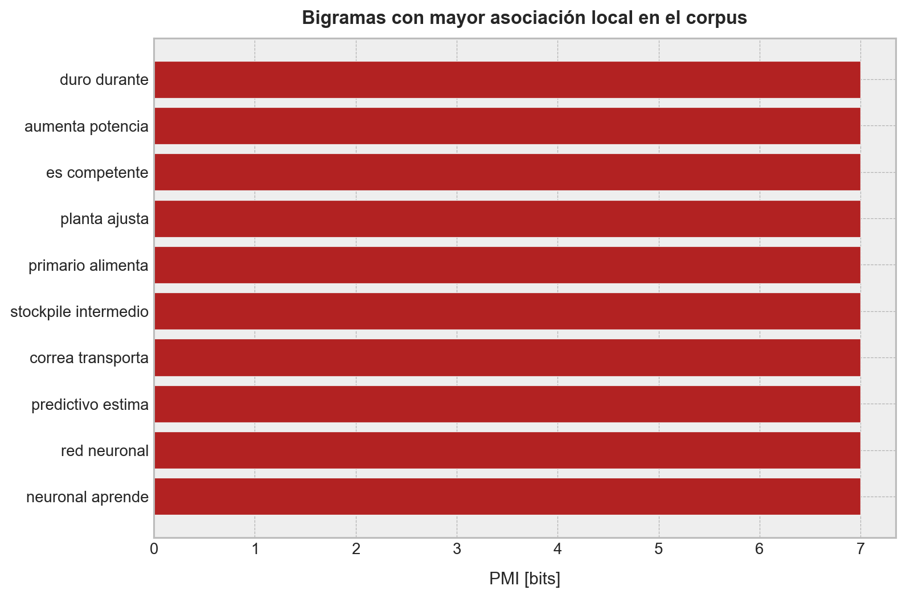
El resultado muestra una diferencia importante entre una bolsa de palabras y una secuencia lingüística. En una bolsa de palabras, sólo nos importa cuántas veces aparece cada token. En una secuencia, en cambio, importa el orden. La información mutua entre \(W_t\) y \(W_{t+1}\) cuantifica parte de esa estructura local: Mide cuánto nos ayuda la palabra actual a anticipar la palabra siguiente.
Desde una perspectiva de NLP, este ejemplo es una versión muy simple de una idea central en modelos de lenguaje: las palabras no son eventos independientes. Cada token aparece condicionado por un contexto. Los modelos modernos explotan justamente esa dependencia contextual, aunque lo hacen a una escala mucho mayor y usando representaciones vectoriales profundas. La información mutua nos entrega una primera herramienta matemática para cuantificar esa dependencia. ◼︎
Divergencia de Kullback-Leibler
Consideremos dos distribuciones de probabilidad que buscan describir el mismo fenómeno. Una de ellas, que denotaremos por \(P\), puede representar la distribución de referencia, la distribución empírica observada o la distribución verdadera que asumimos como punto de comparación. La otra, que denotaremos por \(Q\), puede representar una aproximación, un modelo estimado o una distribución alternativa.
La pregunta que queremos responder es la siguiente: ¿Cuánta información se pierde, en promedio, cuando usamos \(Q\) para representar datos que en realidad siguen la distribución \(P\)? Esta pregunta conduce naturalmente a la divergencia de Kullback-Leibler (o divergencia KL), también llamada entropía relativa.
A diferencia de la información mutua, que mide dependencia entre variables aleatorias, la divergencia KL mide discrepancia entre distribuciones. Su rol será central para conectar teoría de la información, inferencia estadística, entrenamiento de modelos probabilísticos, modelos de lenguaje y aprendizaje profundo.
Definición 3.5 – Divergencia de Kullback-Leibler: Sean \(P\) y \(Q\) dos distribuciones discretas definidas sobre el mismo soporte finito \(\mathcal{X}\). Si \(p(x)\) y \(q(x)\) son sus funciones de masa de probabilidad, definimos la divergencia de Kullback-Leibler desde \(Q\) hacia \(P\), denotada por \(D_{KL}(P\|Q)\), como
\[ D_{KL}(P\|Q) := \sum_{x\in\mathcal{X}} p(x) \log \left( \frac{p(x)}{q(x)} \right) \tag{3.67} \]
La expresión anterior se interpreta como una esperanza tomada bajo la distribución \(P\):
\[ D_{KL}(P\|Q) = \mathrm{E}_{X\sim P} \left[ \log \left( \frac{p(X)}{q(X)} \right) \right] \tag{3.68} \]
Por esta razón, \(D_{KL}(P\|Q)\) mide cuánto difiere, en promedio, el código logarítmico inducido por \(Q\) respecto del código óptimo inducido por \(P\), cuando las muestras realmente provienen de \(P\).
La divergencia KL no es llegar y aplicar; requiere de una condición técnica importante: Si existe un evento \(x\) tal que \(p(x)>0\) y \(q(x)=0\), entonces \(D_{KL}(P\|Q)=+\infty\). Esto es razonable, ya que si el modelo \(Q\) asigna probabilidad cero a un evento que sí puede ocurrir bajo \(P\), entonces el costo informacional de usar \(Q\) para codificar ese evento es literalmente infinito. En cambio, si \(p(x)=0\), el término correspondiente no contribuye a la suma.
Para variables aleatorias continuas, la definición es análoga. Si \(P\) y \(Q\) tienen densidades \(p(x)\) y \(q(x)\) sobre un dominio común \(\Omega\), entonces
\[ D_{KL}(P\|Q) := \int_{\Omega} p(x) \log \left( \frac{p(x)}{q(x)} \right)dx \tag{3.69} \]
La divergencia KL satisface las siguientes propiedades fundamentales:
- (P1): No negatividad. Para cualquier par de distribuciones \(P\) y \(Q\),
\[ D_{KL}(P\|Q)\geq 0 \tag{3.70} \]
La igualdad se cumple si y sólo si \(P=Q\) casi seguramente. Este resultado se conoce como desigualdad de Gibbs.
- (P2): No es simétrica. En general,
\[ D_{KL}(P\|Q) \neq D_{KL}(Q\|P) \tag{3.71} \]
Esto significa que la divergencia KL no mide una distancia geométrica ordinaria entre distribuciones. Medir qué tan malo es usar \(Q\) cuando los datos vienen de \(P\) no es lo mismo que medir qué tan malo es usar \(P\) cuando los datos vienen de \(Q\).
- (P3): No cumple la desigualdad triangular. En general, no se cumple que
\[ D_{KL}(P\|R) \leq D_{KL}(P\|Q)+D_{KL}(Q\|R) \tag{3.72} \]
Por esta razón, la divergencia KL no es una métrica en el sentido algebraico estricto.
- (P4): Es invariante ante cambios de variables invertibles. Si \(Y=s(X)\) para una transformación diferenciable e invertible \(s\), y si \(P_Y\) y \(Q_Y\) son las distribuciones inducidas por \(P_X\) y \(Q_X\), entonces
\[ D_{KL}(P_X\|Q_X) = D_{KL}(P_Y\|Q_Y) \tag{3.73} \]
Esta propiedad es importante: aunque las densidades individuales cambien bajo una transformación de coordenadas, el cociente de densidades que aparece en la divergencia KL cambia de manera compensada, preservando la divergencia.
- (P5): Es aditiva para distribuciones producto. Si \(P(x,y)=P_1(x)P_2(y)\) y \(Q(x,y)=Q_1(x)Q_2(y)\), entonces
\[ D_{KL}(P\|Q) = D_{KL}(P_1\|Q_1) + D_{KL}(P_2\|Q_2). \tag{3.74} \]
Esta propiedad muestra que, si dos componentes independientes se modelan de manera separada, el costo informacional total se suma.
Implementemos la divergencia KL discreta en Python (con base en bits por defecto) para luego jugar con ella en un ejercicio práctico:
def kl_discrete(p, q, base=2):
"""
Calcula D_KL(P || Q) para distribuciones discretas.
Parámetros:
-----------
p : Arreglo de Numpy que hace el papel de distribución de referencia P.
q : Arreglo de Numpy que hace el papel de distribución aproximante Q.
base : Base del logaritmo. Si base=2, la divergencia se mide en bits.
Si base=np.e, se mide en nats. Si base=10, se mide en bans.
Retorna:
--------
dkl : Divergencia de Kullback-Leibler D_KL(P || Q).
"""
p = np.asarray(p, dtype=float)
q = np.asarray(q, dtype=float)
if not np.isclose(p.sum(), 1.0):
raise ValueError("p debe sumar 1.")
if not np.isclose(q.sum(), 1.0):
raise ValueError("q debe sumar 1.")
if np.any((p > 0) & (q == 0)):
return np.inf
mask = p > 0
return np.sum(p[mask] * np.log(p[mask] / q[mask]) / np.log(base))Relación de la divergencia KL con la información mutua
La información mutua puede interpretarse como una divergencia KL particular. Recordemos que, para variables aleatorias discretas \(X\) e \(Y\), se tiene
\[ I(X;Y) = \sum_{x\in\mathcal{X}} \sum_{y\in\mathcal{Y}} p_{XY}(x,y) \log \left( \frac{p_{XY}(x,y)} {p_X(x)p_Y(y)} \right) \tag{3.75} \]
Comparando esta expresión con la definición de KL, observamos que
\[ I(X;Y) = D_{KL} \left( P_{XY}\|P_XP_Y \right) \tag{3.76} \]
Es decir, la información mutua mide cuánto se aleja la distribución conjunta real \(P_{XY}\) de la distribución conjunta que tendríamos si \(X\) e \(Y\) fueran independientes, dada por \(P_XP_Y\).
Otra forma de obtener la misma relación consiste en usar la regla del producto:
\[ p_{XY}(x,y) = p_Y(y)p_{X|Y}(x|y) \tag{3.77} \]
Sustituyendo en la definición de información mutua,
\[ \begin{array}{lll} I(X;Y) &=& \displaystyle \sum_{x\in\mathcal{X}} \sum_{y\in\mathcal{Y}} p_Y(y)p_{X|Y}(x|y) \log \left( \frac{p_Y(y)p_{X|Y}(x|y)} {p_X(x)p_Y(y)} \right) \\[8pt] &=& \displaystyle \sum_{y\in\mathcal{Y}} p_Y(y) \left[ \sum_{x\in\mathcal{X}} p_{X|Y}(x|y) \log \left( \frac{p_{X|Y}(x|y)} {p_X(x)} \right) \right] \\[8pt] &=& \displaystyle \sum_{y\in\mathcal{Y}} p_Y(y) D_{KL} \left( P_{X|Y=y}\|P_X \right) \end{array} \tag{3.78} \]
Por lo tanto,
\[ I(X;Y) = \mathrm{E}_{Y} \left[ D_{KL}(P_{X|Y}\|P_X) \right] \tag{3.79} \]
Esta identidad tiene una interpretación importante. Y es que la información mutua es el cambio promedio entre la distribución marginal de \(X\) y la distribución condicional de \(X\) después de observar \(Y\). Si observar \(Y\) no cambia nuestra distribución sobre \(X\), entonces no hay información compartida. Si observar \(Y\) modifica fuertemente nuestras creencias sobre \(X\), entonces la información mutua es alta.
Métrica de información de Fisher y su relación local con KL
La divergencia KL permite comparar dos distribuciones completas. Sin embargo, en estadística y aprendizaje automático muchas veces trabajamos con una familia paramétrica de distribuciones
\[ \left\{p_{\boldsymbol{\theta}}(x):\boldsymbol{\theta}\in\Theta\subseteq\mathbb{R}^{d}\right\} \tag{3.80} \]
En ese contexto, una pregunta natural es: ¿Cuánto cambia la distribución \(p_{\boldsymbol{\theta}}\) cuando perturbamos ligeramente el parámetro \(\boldsymbol{\theta}\)? La respuesta local a esta pregunta está dada por la información de Fisher.
Definimos primero la función de scoring:
\[ \mathbf{s}_{\boldsymbol{\theta}}(x) = \nabla_{\boldsymbol{\theta}} \log p_{\boldsymbol{\theta}}(x) \tag{3.81} \]
Esta función de scoring mide la sensibilidad local del logaritmo de la densidad respecto de los parámetros. A partir de ella, definimos la matriz de información de Fisher como
\[ \mathcal{I}(\boldsymbol{\theta}) = \mathrm{E}_{\boldsymbol{\theta}} \left[ \mathbf{s}_{\boldsymbol{\theta}}(X) \mathbf{s}_{\boldsymbol{\theta}}(X)^{\top} \right] \tag{3.82} \]
Bajo condiciones regulares, esta matriz también puede escribirse como
\[ \mathcal{I}(\boldsymbol{\theta}) = - \mathrm{E}_{\boldsymbol{\theta}} \left[ \nabla_{\boldsymbol{\theta}}^{2} \log p_{\boldsymbol{\theta}}(X) \right] \tag{3.83} \]
La relación con la divergencia KL aparece al comparar dos distribuciones muy cercanas dentro de la misma familia paramétrica. Si perturbamos el parámetro desde \(\boldsymbol{\theta}\) hacia \(\boldsymbol{\theta}+\boldsymbol{\delta}\), entonces
\[ D_{KL} \left( P_{\boldsymbol{\theta}}\|P_{\boldsymbol{\theta}+\boldsymbol{\delta}} \right) = \frac{1}{2} \boldsymbol{\delta}^{\top} \mathcal{I}(\boldsymbol{\theta}) \boldsymbol{\delta} + o(\|\boldsymbol{\delta}\|^{2}) \tag{3.84} \]
En el caso unidimensional, si \(\theta\in\mathbb{R}\), esto se reduce a
\[ D_{KL} \left( P_{\theta}\|P_{\theta+\delta} \right) = \frac{1}{2} \mathcal{I}(\theta)\delta^{2} + o(\delta^{2}) \tag{3.85} \]
Esta fórmula entrega una interpretación extremadamente útil: La información de Fisher mide la curvatura local de la divergencia KL. Si \(\mathcal{I}(\theta)\) es grande, una pequeña perturbación en el parámetro produce un gran cambio en la distribución. Si \(\mathcal{I}(\theta)\) es pequeña, la distribución es relativamente insensible a cambios pequeños del parámetro.
Por ejemplo, si \(X\sim\mathcal{N}(\mu,\sigma^2)\) y suponemos \(\sigma^2\) conocida, entonces la información de Fisher respecto de \(\mu\) es
\[ \mathcal{I}(\mu)=\frac{1}{\sigma^2} \tag{3.86} \]
Por lo tanto, distribuciones normales con varianza pequeña son muy sensibles a cambios en la media: mover un poco \(\mu\) desplaza fuertemente la masa de probabilidad. En cambio, si la varianza es grande, la misma perturbación de la media produce un cambio relativo menor.
Ejemplo 3.9 – Divergencia KL entre dos distribuciones normales: Consideremos dos distribuciones normales unidimensionales
\[ P=\mathcal{N}(\mu_0,\sigma_0^2), \qquad Q=\mathcal{N}(\mu_1,\sigma_1^2) \tag{3.87} \]
La divergencia KL desde \(Q\) hacia \(P\) está dada por
\[ D_{KL}(P\|Q) = \log\left(\frac{\sigma_1}{\sigma_0}\right) + \frac{\sigma_0^2+(\mu_0-\mu_1)^2}{2\sigma_1^2} - \frac{1}{2} \tag{3.88} \]
Un caso particularmente simple ocurre cuando ambas distribuciones tienen la misma varianza \(\sigma^2\). En ese caso,
\[ D_{KL} \left( \mathcal{N}(\mu_0,\sigma^2)\|\mathcal{N}(\mu_1,\sigma^2) \right) = \frac{(\mu_0-\mu_1)^2}{2\sigma^2} \tag{3.89} \]
Esta expresión coincide exactamente con la aproximación local dada por la información de Fisher, ya que \(\mathcal{I}(\mu)=1/\sigma^2\).
Implementemos el caso general y visualicemos la asimetría de KL.
def normal_pdf(x, mu, sigma):
"""
Densidad de una distribución normal unidimensional.
"""
return (1 / (np.sqrt(2 * np.pi) * sigma)) * np.exp(
-0.5 * ((x - mu) / sigma)**2
)
def kl_normal_1d(mu0, sigma0, mu1, sigma1):
"""
Calcula D_KL(N(mu0, sigma0^2) || N(mu1, sigma1^2)).
"""
return (
np.log(sigma1 / sigma0)
+ (sigma0**2 + (mu0 - mu1)**2) / (2 * sigma1**2)
- 0.5
)# Parámetros de dos distribuciones normales.
mu0, sigma0 = 0.0, 1.0
mu1, sigma1 = 1.2, 1.8
# Cálculo de KL en ambas direcciones.
dkl_pq = kl_normal_1d(mu0, sigma0, mu1, sigma1)
dkl_qp = kl_normal_1d(mu1, sigma1, mu0, sigma0)
kl_normal_df = pd.DataFrame({
"Divergencia": [r"$D_{KL}(P\|Q)$", r"$D_{KL}(Q\|P)$"],
"Valor [nats]": [dkl_pq, dkl_qp]
})
kl_normal_df| Divergencia | Valor [nats] | |
|---|---|---|
| 0 | $D_{KL}(P\|Q)$ | 0.464330 |
| 1 | $D_{KL}(Q\|P)$ | 1.252213 |
# Visualización de las densidades.
x_grid = np.linspace(-5, 7, 600)
p_density = normal_pdf(x_grid, mu0, sigma0)
q_density = normal_pdf(x_grid, mu1, sigma1)
fig, ax = plt.subplots(figsize=(9, 5))
ax.plot(
x_grid,
p_density,
linewidth=2.4,
label=fr"$P=\mathcal{{N}}({mu0},{sigma0**2})$"
)
ax.plot(
x_grid,
q_density,
linewidth=2.4,
label=fr"$Q=\mathcal{{N}}({mu1},{sigma1**2:.2f})$"
)
ax.set_title(
"Divergencia KL entre dos distribuciones normales",
fontsize=13,
fontweight="bold",
pad=10
)
ax.set_xlabel(r"$x$", fontsize=12, labelpad=10)
ax.set_ylabel("Densidad", fontsize=12, labelpad=10)
ax.legend(loc="best", frameon=True)
plt.tight_layout()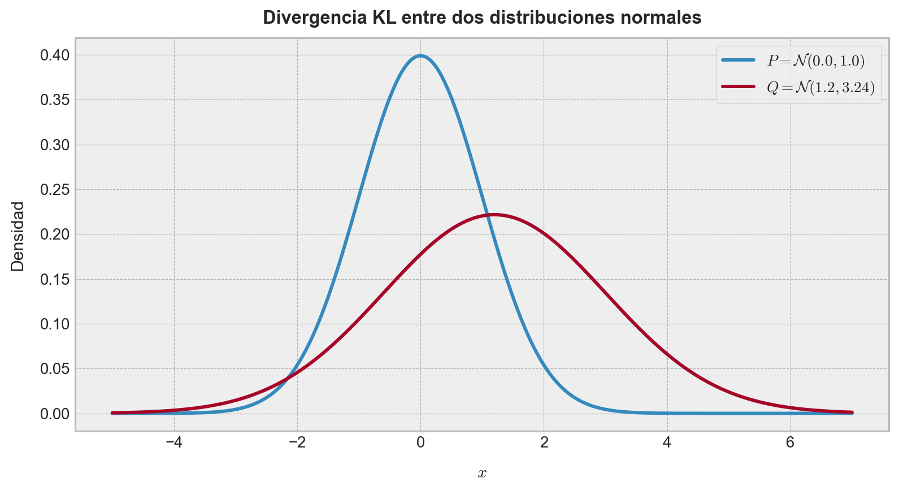
fig, ax = plt.subplots(figsize=(9, 4))
ax.bar(
kl_normal_df["Divergencia"],
kl_normal_df["Valor [nats]"]
)
ax.set_ylabel(
"Divergencia KL [nats]",
fontsize=12,
labelpad=10
)
ax.set_title(
"La divergencia KL es direccional",
fontsize=13,
fontweight="bold",
pad=10
)
plt.tight_layout()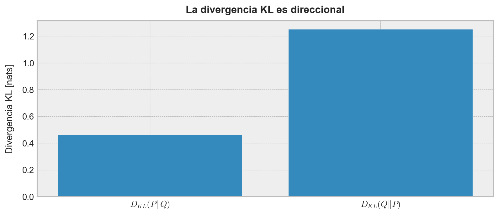
El resultado muestra que \(D_{KL}(P\|Q)\) y \(D_{KL}(Q\|P)\) no tienen por qué coincidir. La razón es que cada divergencia evalúa el costo informacional promedio bajo una distribución distinta. En \(D_{KL}(P\|Q)\), los datos se promedian según \(P\); en \(D_{KL}(Q\|P)\), se promedian según \(Q\). Por eso KL es una divergencia direccional, no una distancia simétrica. ◼︎
Ejemplo 3.10 – Divergencia KL para comparar modelos de próxima palabra en frases completas: En procesamiento de lenguaje natural, una frase puede entenderse como una secuencia de tokens. Si observamos un contexto, por ejemplo \(c=(w_{t-1},w_t)\), un modelo de lenguaje busca estimar una distribución sobre el próximo token \(W_{t+1}\).
Supongamos que \(P(\cdot|c)\) representa la distribución empírica del próximo token después de un contexto observado en un corpus, mientras que \(Q(\cdot|c)\) representa la distribución predicha por un modelo. Entonces podemos medir el costo informacional de usar \(Q\) en lugar de \(P\) mediante
\[ D_{KL} \left( P(\cdot|c)\|Q(\cdot|c) \right) = \sum_{w\in\mathcal{V}} P(w|c) \log \left( \frac{P(w|c)}{Q(w|c)} \right) \tag{3.90} \]
Este ejemplo será más interesante que comparar tokens aislados, porque trabajaremos con frases completas y con contextos de dos palabras:
technical_sentences = [
"el molino sag procesa mineral duro durante el turno",
"el molino sag aumenta potencia cuando el mineral es competente",
"el molino de bolas estabiliza la granulometria del producto",
"el molino primario reduce mineral antes de la flotacion",
"el modelo predictivo estima el tonelaje esperado del molino",
"el modelo de lenguaje predice la siguiente palabra de una frase",
"el modelo probabilistico asigna masa a cada token posible",
"la red neuronal aprende patrones no lineales desde los datos",
"la red bayesiana representa dependencias entre variables aleatorias",
"la red de transporte mueve mineral hacia la planta",
]
literary_sentences = [
"la poesia describe la noche lenta sobre la ciudad",
"el viajero observa la lluvia caer sobre el camino",
"la guitarra acompaña una cancion tranquila junto al mar",
"el silencio cubre la casa cuando termina la musica",
"la memoria guarda imagenes antiguas de la infancia",
]
sentences = technical_sentences + literary_sentences# Algunas funciones auxiliares para resolver nuestro ejercicio.
def tokenize(sentence):
"""
Tokenizador simple para frases en minúscula.
"""
sentence = sentence.lower()
return re.findall(r"[a-záéíóúñ]+", sentence)
def build_vocabulary(sentences):
"""
Construye vocabulario ordenado desde un conjunto de frases.
"""
vocab = sorted(set(token for s in sentences for token in tokenize(s)))
return np.array(vocab)
def next_tokens_after_prefix(sentences, prefix):
"""
Extrae los tokens que aparecen inmediatamente después de un prefijo.
"""
prefix = tuple(prefix)
k = len(prefix)
next_tokens = []
for sentence in sentences:
tokens = tokenize(sentence)
for i in range(len(tokens) - k):
if tuple(tokens[i:i+k]) == prefix:
next_tokens.append(tokens[i+k])
return next_tokens
def smoothed_distribution(tokens, vocab, alpha=0.0):
"""
Distribución categórica sobre vocabulario con suavizado aditivo.
"""
counts = Counter(tokens)
values = np.array([counts[token] for token in vocab], dtype=float)
values = values + alpha
if values.sum() == 0:
raise ValueError("No hay masa de probabilidad para normalizar.")
return values / values.sum()Construyamos tres tipos de modelos para la siguiente palabra:
- Modelo empírico contextual: Estima el próximo token usando el contexto específico.
- Modelo unigram general: Ignora el contexto y usa frecuencias globales del corpus completo.
- Modelo literario: Ignora el dominio técnico y usa frecuencias de frases no técnicas.
vocab = build_vocabulary(sentences)
# Tokens globales.
all_tokens = [token for s in sentences for token in tokenize(s)]
literary_tokens = [token for s in literary_sentences for token in tokenize(s)]
# Distribuciones no contextuales suavizadas.
q_unigram = smoothed_distribution(all_tokens, vocab, alpha=0.1)
q_literary = smoothed_distribution(literary_tokens, vocab, alpha=0.1)Ahora evaluaremos varios contextos completos de dos palabras:
contexts = [
("el", "molino"),
("el", "modelo"),
("la", "red"),
]
kl_context_rows = []
context_distributions = {}
for context in contexts:
observed_next = next_tokens_after_prefix(sentences, context)
# Distribución empírica sin suavizado: P(.|contexto).
p_context = smoothed_distribution(observed_next, vocab, alpha=0.0)
# Modelo contextual suavizado: Q_context(.|contexto).
# Es cercano a P, pero asigna una pequeña masa a alternativas no observadas.
q_context = smoothed_distribution(observed_next, vocab, alpha=0.1)
dkl_context = kl_discrete(p_context, q_context, base=2)
dkl_unigram = kl_discrete(p_context, q_unigram, base=2)
dkl_literary = kl_discrete(p_context, q_literary, base=2)
context_name = " ".join(context)
kl_context_rows.extend([
{
"Contexto": context_name,
"Modelo": "Contextual suavizado",
"D_KL [bits]": dkl_context,
},
{
"Contexto": context_name,
"Modelo": "Unigram general",
"D_KL [bits]": dkl_unigram,
},
{
"Contexto": context_name,
"Modelo": "Unigram literario",
"D_KL [bits]": dkl_literary,
},
])
context_distributions[context_name] = {
"observed_next": observed_next,
"p_context": p_context,
"q_context": q_context,
"q_unigram": q_unigram,
"q_literary": q_literary,
}
# Llevamos a DataFrame y mostramos los resultados.
kl_context_df = pd.DataFrame(kl_context_rows)
kl_context_df| Contexto | Modelo | D_KL [bits] | |
|---|---|---|---|
| 0 | el molino | Contextual suavizado | 1.585353 |
| 1 | el molino | Unigram general | 4.467063 |
| 2 | el molino | Unigram literario | 6.682266 |
| 3 | el modelo | Contextual suavizado | 1.850424 |
| 4 | el modelo | Unigram general | 4.642601 |
| 5 | el modelo | Unigram literario | 6.309018 |
| 6 | la red | Contextual suavizado | 1.850424 |
| 7 | la red | Unigram general | 4.642601 |
| 8 | la red | Unigram literario | 6.309018 |
Visualicemos el costo informacional de cada modelo por contexto:
fig, ax = plt.subplots(figsize=(9, 5))
model_order = [
"Contextual suavizado",
"Unigram general",
"Unigram literario",
]
x_pos = np.arange(len(contexts))
width = 0.24
for j, model in enumerate(model_order):
values = []
for context in contexts:
context_name = " ".join(context)
value = kl_context_df.loc[
(kl_context_df["Contexto"] == context_name)
& (kl_context_df["Modelo"] == model),
"D_KL [bits]"
].iloc[0]
values.append(value)
ax.bar(
x_pos + (j - 1) * width,
values,
width=width,
label=model
)
ax.set_xticks(x_pos)
ax.set_xticklabels([" ".join(c) for c in contexts])
ax.set_ylabel(
r"$D_{KL}(P(\cdot|c)\|Q(\cdot|c))$ [bits]",
fontsize=12,
labelpad=10
)
ax.set_title(
"KL mide el costo de usar un modelo incorrecto de próxima palabra",
fontsize=13,
fontweight="bold",
pad=10
)
ax.legend(loc="best", frameon=True)
plt.tight_layout()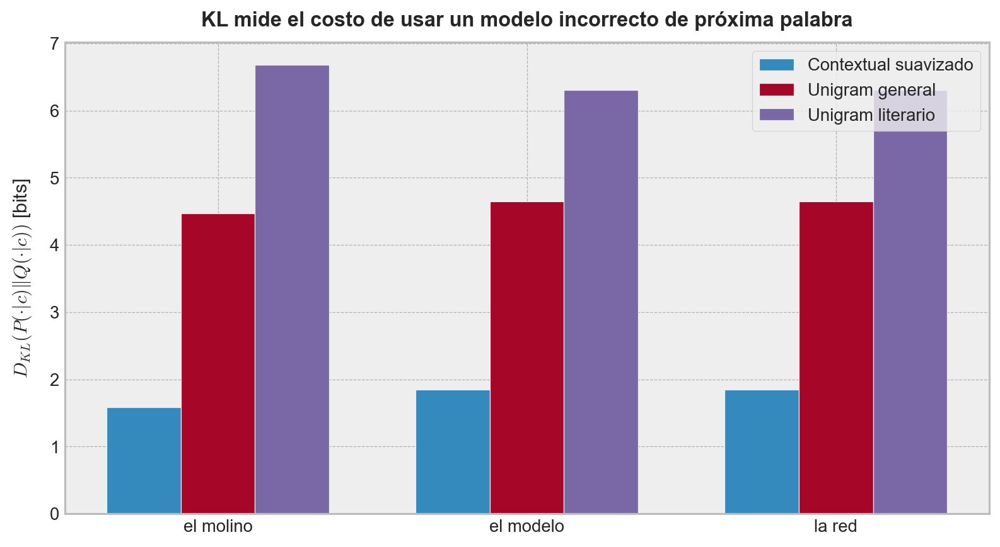
Ahora examinemos en detalle el contexto \(c=(\text{el},\text{molino})\):
context_name = "el molino"
ctx = context_distributions[context_name]
p_context = ctx["p_context"]
q_context = ctx["q_context"]
q_unigram = ctx["q_unigram"]
q_literary = ctx["q_literary"]
# Mostramos sólo tokens con probabilidad empírica positiva
# o con alta probabilidad bajo algún modelo.
mask = (
(p_context > 0)
| (q_context > np.quantile(q_context, 0.90))
| (q_unigram > np.quantile(q_unigram, 0.90))
)
plot_tokens = vocab[mask]
plot_df = pd.DataFrame({
"Token": plot_tokens,
"P empírico": p_context[mask],
"Q contextual": q_context[mask],
"Q unigram": q_unigram[mask],
"Q literario": q_literary[mask],
})
# Mostramos en pantalla estos resultados.
plot_df| Token | P empírico | Q contextual | Q unigram | Q literario | |
|---|---|---|---|---|---|
| 0 | de | 0.25 | 0.085271 | 0.041809 | 0.020794 |
| 1 | el | 0.00 | 0.007752 | 0.089788 | 0.058601 |
| 2 | la | 0.00 | 0.007752 | 0.110350 | 0.172023 |
| 3 | mineral | 0.00 | 0.007752 | 0.028101 | 0.001890 |
| 4 | modelo | 0.00 | 0.007752 | 0.021247 | 0.001890 |
| 5 | molino | 0.00 | 0.007752 | 0.034955 | 0.001890 |
| 6 | primario | 0.25 | 0.085271 | 0.007539 | 0.001890 |
| 7 | red | 0.00 | 0.007752 | 0.021247 | 0.001890 |
| 8 | sag | 0.50 | 0.162791 | 0.014393 | 0.001890 |
fig, ax = plt.subplots(figsize=(9, 4))
x_pos = np.arange(len(plot_tokens))
width = 0.20
series = [
("P empírico", plot_df["P empírico"].to_numpy()),
("Q contextual", plot_df["Q contextual"].to_numpy()),
("Q unigram", plot_df["Q unigram"].to_numpy()),
("Q literario", plot_df["Q literario"].to_numpy()),
]
for j, (label, values) in enumerate(series):
ax.bar(
x_pos + (j - 1.5) * width,
values,
width=width,
label=label
)
ax.set_xticks(x_pos)
ax.set_xticklabels(plot_tokens, rotation=35, ha="right")
ax.set_ylabel(
"Probabilidad",
fontsize=12,
labelpad=10
)
ax.set_title(
"Distribuciones de próxima palabra después del contexto 'el molino'",
fontsize=13,
fontweight="bold",
pad=10
)
ax.legend(loc="best", frameon=True)
plt.tight_layout()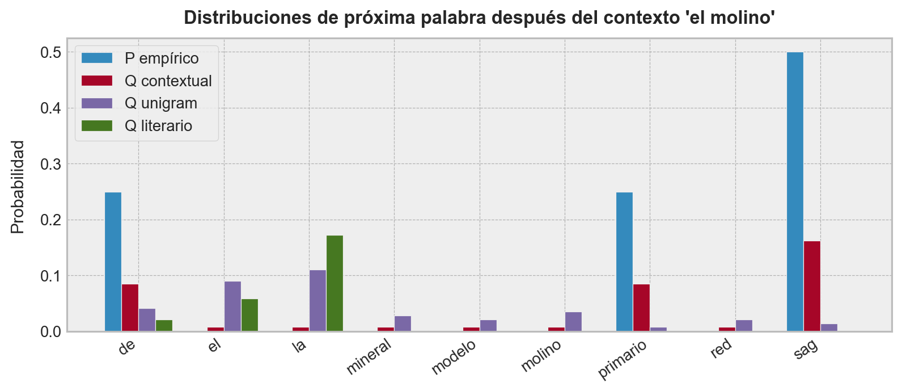
El resultado es conceptualmente importante. El modelo contextual asigna alta probabilidad a palabras que efectivamente aparecen después de la frase “el molino”, como “sag”, “de” o “primario”. El modelo unigram general asigna probabilidades según frecuencia global, por lo que no captura completamente la estructura del contexto. El modelo literario es todavía peor para este contexto técnico, ya que su masa de probabilidad está determinada por frases de otro dominio.
Desde la perspectiva de KL, esto significa que usar un modelo no contextual o mal adaptado al dominio tiene un costo informacional medible. En lenguaje natural, cada contexto induce una distribución distinta sobre próximos tokens. Por eso, un buen modelo de lenguaje no sólo debe conocer qué palabras son frecuentes, sino también cómo cambia la distribución de la próxima palabra al observar una frase previa. La divergencia KL permite cuantificar precisamente esa diferencia entre la distribución empírica contextual y la distribución propuesta por el modelo. ◼︎
Entropía cruzada
Vamos a proseguir con la ronda de conceptos fundamentales de la teoría de la información estudiando la entropía cruzada entre dos distribuciones de probabilidad. Este concepto aparece de manera natural cuando existe una distribución de referencia \(p\), que representa el mecanismo real o empírico que genera los datos, y una distribución alternativa \(q\), que representa el mecanismo usado por un modelo para codificar, aproximar o predecir esos datos.
La idea intuitiva es la siguiente: si los datos son generados por \(p\), pero nosotros los codificamos usando probabilidades asignadas por \(q\), entonces la entropía cruzada mide la cantidad promedio de información, o costo promedio de codificación, inducido por usar \(q\) en lugar de \(p\). Por esta razón, la entropía cruzada conecta directamente con aprendizaje automático: entrenar un modelo probabilístico puede interpretarse como ajustar \(q\) para que asigne alta probabilidad a los eventos efectivamente observados.
Esta idea se formaliza en la siguiente definición.
Definición 3.6 – Entropía cruzada: Sea \(X\) una variable aleatoria discreta con soporte finito \(\Omega\). Sean \(p\) y \(q\) dos funciones de masa de probabilidad definidas sobre \(\Omega\). Se define la entropía cruzada de \(q\) relativa a \(p\) como
\[ H(p,q) := \mathrm{E}_{X\sim p} \left[ -\log(q(X)) \right] \tag{3.91} \]
En forma explícita,
\[ H(p,q) = -\sum_{x\in\Omega} p(x)\log(q(x)) \tag{3.92} \]
Esta definición exige una condición de soporte: si existe un evento \(x\in\Omega\) tal que \(p(x)>0\) pero \(q(x)=0\), entonces \(H(p,q)=+\infty\). Esto es natural: Si un evento puede ocurrir bajo la distribución real \(p\), pero el modelo \(q\) le asigna probabilidad nula, entonces el costo de codificar o predecir dicho evento usando \(q\) se vuelve infinito.
La entropía cruzada se relaciona directamente con la entropía de Shannon y la divergencia de Kullback-Leibler. En efecto,
\[ \begin{array}{lll} H(p,q) &=& \displaystyle -\sum_{x\in\Omega} p(x)\log(q(x)) \\[8pt] &=& \displaystyle -\sum_{x\in\Omega} p(x)\log(p(x)) + \sum_{x\in\Omega} p(x) \log \left( \frac{p(x)}{q(x)} \right) \\[8pt] &=& H(p)+D_{KL}(p\|q) \end{array} \tag{3.93} \]
Por lo tanto,
\[ H(p,q) = H(p)+D_{KL}(p\|q) \tag{3.94} \]
Esta identidad es fundamental. Como \(D_{KL}(p\|q)\geq 0\), se tiene que
\[ H(p,q)\geq H(p) \tag{3.95} \]
con igualdad si y sólo si \(p=q\) sobre el soporte relevante. Dicho de manera más intuitiva: El mejor código probabilístico para datos generados por \(p\) es el que usa la propia distribución \(p\). Cualquier aproximación \(q\) introduce un costo adicional igual a \(D_{KL}(p\|q)\).
Desde el punto de vista del aprendizaje automático, esta identidad tiene una consecuencia inmediata. Si \(p\) es la distribución real de los datos, entonces \(H(p)\) no depende del modelo. Por tanto, minimizar \(H(p,q)\) con respecto a \(q\) es equivalente a minimizar \(D_{KL}(p\|q)\):
\[ \arg\min_q H(p,q) = \arg\min_q D_{KL}(p\|q) \tag{3.96} \]
Por esta razón, la entropía cruzada se usa como función de pérdida en muchos modelos probabilísticos: Clasificadores logísticos, redes neuronales, modelos de lenguaje y sistemas generativos. De hecho, resulta esencial en el más fundamental de los modelos de clasificación, que es el modelo de regresión logística binaria.
La extensión al caso continuo puede formularse de manera análoga. Si \(p\) y \(q\) son densidades definidas con respecto a la misma medida de referencia, la entropía cruzada diferencial se define como
\[ h(p,q) = -\int_{\Omega} p(x)\log(q(x))dx \tag{3.97} \]
y satisface
\[ h(p,q) = h(p)+D_{KL}(p\|q) \tag{3.98} \]
No obstante, tal como ocurre con la entropía diferencial, la interpretación absoluta de \(h(p,q)\) debe hacerse con cuidado, pues depende de la escala y de la medida de referencia. En aplicaciones de machine learning, el caso discreto y categórico suele ser el más importante cuando hablamos de clasificación y lenguaje natural.
Entropía cruzada empírica
En la práctica no conocemos la distribución real \(p\). Sólo disponemos de una muestra,
\[ x_1,x_2,\dots,x_m \sim p \tag{3.99} \]
Si un modelo asigna probabilidad \(q(x_i)\) a cada observación, entonces la entropía cruzada se estima mediante el promedio empírico
\[ \widehat{H}(p,q) = -\frac{1}{m} \sum_{i=1}^{m} \log(q(x_i)) \tag{3.100} \]
Esta expresión también se conoce como pérdida logarítmica promedio o log-loss. En efecto, minimizar (3.100) equivale a maximizar la verosimilitud de los datos bajo el modelo \(q\).
En clasificación multiclase, si la respuesta \(y_i\) pertenece a una de \(K\) clases y el modelo asigna probabilidades
\[ \mathbf{q}_i = (q_{i1},q_{i2},\dots,q_{iK}), \qquad \sum_{s=1}^{K}q_{is}=1 \tag{3.101} \]
entonces, usando un esquema de codificación one-hot (donde fragmentamos una variable categórica en tantas variables binarias como categorías existan), la entropía cruzada categórica queda dada por
\[ \mathcal{L}_{CE} = -\frac{1}{m} \sum_{i=1}^{m} \sum_{s=1}^{K} y_{is}\log(q_{is}) \tag{3.102} \]
Como \(y_{is}=1\) sólo para la clase correcta, esta expresión se reduce a
\[ \mathcal{L}_{CE} = -\frac{1}{m} \sum_{i=1}^{m} \log(q_{i,y_i}) \tag{3.103} \]
donde \(q_{i,y_i}\) es la probabilidad que el modelo asigna a la clase verdadera de la observación \(i\).
Ejemplo 3.11 – Entropía cruzada en regresión logística binaria: La entropía cruzada suele utilizarse como función de costo en modelos de clasificación. Consideremos el caso más simple: una variable aleatoria binaria \(Y\in\{0,1\}\) y un vector de entrada \(\mathbf{x}\in\mathbb{R}^{n}\).
La regresión logística binaria modela la probabilidad de la clase positiva mediante
\[ P(Y=1|\mathbf{x}) = \sigma(\mathbf{w}^{\top}\mathbf{x}+b) \tag{3.104} \]
donde
\[ \sigma(z) = \frac{1}{1+\exp(-z)} \tag{3.105} \]
es la función logística, \(\mathbf{w}\in\mathbb{R}^{n}\) es un vector de pesos y \(b\in\mathbb{R}\) es un sesgo.
Para una observación \(i\), escribimos
\[ \hat{y}_i = \sigma(\mathbf{w}^{\top}\mathbf{x}_i+b). \tag{3.106} \]
La distribución predicha por el modelo es de tipo Bernoulli:
\[ q_i(Y=1)=\hat{y}_i, \qquad q_i(Y=0)=1-\hat{y}_i \tag{3.107} \]
Como la etiqueta real \(y_i\) es igual a \(0\) o \(1\), la entropía cruzada binaria promedio queda dada por
\[ \mathcal{L}_{BCE}(\mathbf{w},b) = -\frac{1}{m} \sum_{i=1}^{m} \left[ y_i\log(\hat{y}_i) + (1-y_i)\log(1-\hat{y}_i) \right] \tag{3.108} \]
El signo entre los dos términos dentro del corchete es positivo. La pérdida completa lleva un signo negativo delante, porque queremos penalizar probabilidades pequeñas asignadas a la clase verdadera.
El gradiente de esta pérdida tiene una forma especialmente simple. Si \(\hat{\mathbf{y}}=(\hat{y}_1,\dots,\hat{y}_m)\) y \(\mathbf{y}=(y_1,\dots,y_m)\), entonces
\[ \nabla_{\mathbf{w}}\mathcal{L}_{BCE} = \frac{1}{m} \mathbf{X}^{\top} (\hat{\mathbf{y}}-\mathbf{y}) \tag{3.109} \]
y
\[ \frac{\partial \mathcal{L}_{BCE}}{\partial b} = \frac{1}{m} \sum_{i=1}^{m} (\hat{y}_i-y_i) \tag{3.110} \]
Esto muestra por qué la combinación “sigmoide + entropía cruzada” es tan conveniente: la derivada se reduce al error probabilístico \(\hat{y}_i-y_i\).
Implementemos un pequeño clasificador logístico desde cero. En efecto:
# Semilla para reproducibilidad.
rng = np.random.default_rng(42)
# Datos sintéticos bidimensionales.
n_samples = 500
X0 = rng.normal(loc=[-1.2, -1.0], scale=[0.75, 0.65], size=(n_samples // 2, 2))
X1 = rng.normal(loc=[1.1, 1.0], scale=[0.75, 0.65], size=(n_samples // 2, 2))
X_bin = np.vstack([X0, X1])
y_bin = np.hstack([
np.zeros(n_samples // 2),
np.ones(n_samples // 2)
])
# Agregamos una permutación aleatoria.
idx = rng.permutation(n_samples)
X_bin = X_bin[idx]
y_bin = y_bin[idx]# Funciones auxiliares: Logística y pérdida logarítmica.
def sigmoid(z):
"""
Función logística.
"""
return 1 / (1 + np.exp(-z))
def binary_cross_entropy(y_true, y_pred, eps=1e-12):
"""
Entropía cruzada binaria promedio.
"""
y_pred = np.clip(y_pred, eps, 1 - eps)
return -np.mean(
y_true * np.log(y_pred)
+ (1 - y_true) * np.log(1 - y_pred)
)# Inicialización de parámetros.
w = np.zeros(X_bin.shape[1])
b = 0.0
# Hiperparámetros de entrenamiento.
lr = 0.25
n_iter = 500
loss_history = []
for _ in range(n_iter):
# Forward pass.
logits = X_bin @ w + b
y_hat = sigmoid(logits)
# Pérdida.
loss = binary_cross_entropy(y_bin, y_hat)
loss_history.append(loss)
# Gradientes.
error = y_hat - y_bin
grad_w = X_bin.T @ error / n_samples
grad_b = np.mean(error)
# Actualización por gradiente descendente.
w -= lr * grad_w
b -= lr * grad_b
# Mostramos los parámetros estimados.
print("w =", np.round(w, 4))
print("b =", np.round(b, 4))
print("BCE final =", round(loss_history[-1], 4))w = [2.7339 2.72 ]
b = 0.5251
BCE final = 0.0661fig, ax = plt.subplots(figsize=(9, 5))
ax.plot(loss_history, linewidth=2, color="firebrick")
ax.set_title(
"Entrenamiento de regresión logística mediante entropía cruzada",
fontsize=13,
fontweight="bold",
pad=10
)
ax.set_xlabel("Iteración", fontsize=12, labelpad=10)
ax.set_ylabel("BCE promedio", fontsize=12, labelpad=10)
plt.tight_layout()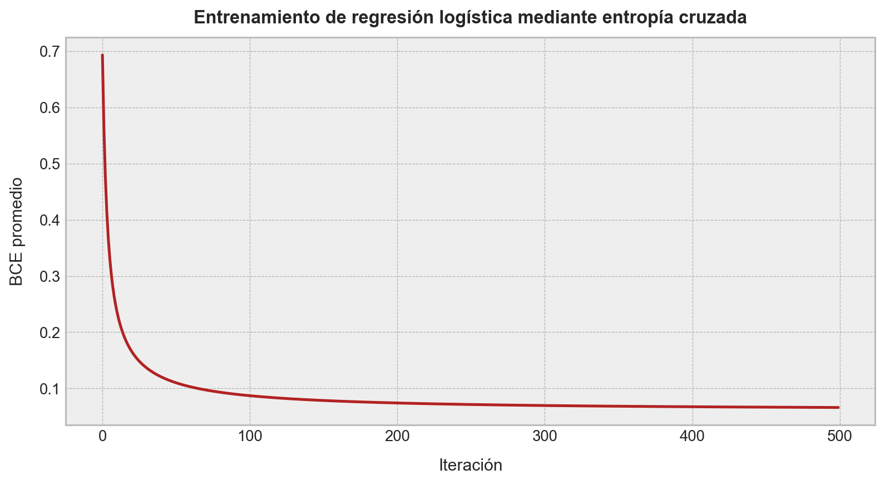
Visualicemos ahora la frontera de decisión aprendida por el modelo:
fig, ax = plt.subplots(figsize=(9, 5))
ax.scatter(
X_bin[:, 0],
X_bin[:, 1],
c=y_bin,
s=35,
alpha=0.75,
ec="k",
lw=0.5
)
# Frontera w1*x1 + w2*x2 + b = 0.
x1_grid = np.linspace(X_bin[:, 0].min() - 0.5, X_bin[:, 0].max() + 0.5, 200)
x2_boundary = -(w[0] * x1_grid + b) / w[1]
ax.plot(
x1_grid,
x2_boundary,
linewidth=2.2,
label="Frontera de decisión",
color="firebrick"
)
ax.set_title(
"Frontera aprendida por regresión logística",
fontsize=13,
fontweight="bold",
pad=10
)
ax.set_xlabel(r"$x_1$", fontsize=12, labelpad=10)
ax.set_ylabel(r"$x_2$", fontsize=12, labelpad=10)
ax.legend(loc="best", frameon=True)
plt.tight_layout()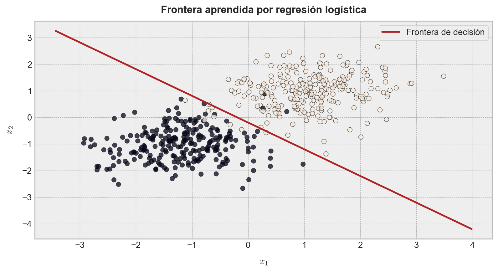
En este ejemplo, minimizar la entropía cruzada equivale a encontrar los parámetros \(\mathbf{w}\) y \(b\) que asignan alta probabilidad a las etiquetas observadas. Si una observación pertenece a la clase positiva, el modelo es penalizado cuando \(\hat{y}_i\) es pequeño. Si pertenece a la clase negativa, el modelo es penalizado cuando \(1-\hat{y}_i\) es pequeño. ◼︎
Ejemplo 3.12 – Entropía cruzada en predicción de próximas palabras: En procesamiento de lenguaje natural, la entropía cruzada aparece de manera directa al evaluar modelos de lenguaje. Si una frase se representa como una secuencia de tokens
\[ w_1,w_2,\dots,w_T \tag{3.111} \]
entonces un modelo de lenguaje asigna probabilidades condicionales del tipo
\[ q(w_t|w_1,\dots,w_{t-1}) \tag{3.112} \]
La entropía cruzada empírica por token se calcula como
\[ \widehat{H}(p,q) = -\frac{1}{T} \sum_{t=1}^{T} \log q(w_t|w_1,\dots,w_{t-1}) \tag{3.113} \]
En palabras simples, evaluamos cuánta sorpresa promedio experimenta el modelo frente a las palabras que realmente aparecen en el texto.
Construyamos un ejemplo con frases completas y dos modelos ficticios de próxima palabra. El primer modelo será más consistente con el dominio técnico del corpus; el segundo será menos informado.
Vamos con una implementación en Python:
# Frases de evaluación.
sentences_eval = [
"el molino procesa mineral duro",
"la red neuronal aprende patrones",
"el modelo predice la siguiente palabra",
"la planta ajusta el tonelaje"
]
# Pares contexto -> token observado.
observations = [
("el", "molino"),
("molino", "procesa"),
("procesa", "mineral"),
("mineral", "duro"),
("la", "red"),
("red", "neuronal"),
("neuronal", "aprende"),
("aprende", "patrones"),
("el", "modelo"),
("modelo", "predice"),
("predice", "la"),
("la", "siguiente"),
("siguiente", "palabra"),
("la", "planta"),
("planta", "ajusta"),
("ajusta", "el"),
("el", "tonelaje"),
]
# Probabilidades asignadas por dos modelos ficticios al token observado.
# Modelo A: más informado por dominio.
# Modelo B: más débil o menos contextual.
model_probs = pd.DataFrame({
"Contexto": [c for c, _ in observations],
"Token observado": [w for _, w in observations],
"q_A(token observado | contexto)": [
0.30, 0.35, 0.42, 0.28,
0.25, 0.55, 0.32, 0.25,
0.28, 0.44, 0.35, 0.38, 0.50,
0.22, 0.40, 0.30, 0.26
],
"q_B(token observado | contexto)": [
0.08, 0.10, 0.12, 0.09,
0.07, 0.12, 0.09, 0.08,
0.08, 0.11, 0.12, 0.10, 0.14,
0.07, 0.11, 0.10, 0.08
]
})
model_probs.head()| Contexto | Token observado | q_A(token observado | contexto) | q_B(token observado | contexto) | |
|---|---|---|---|---|
| 0 | el | molino | 0.30 | 0.08 |
| 1 | molino | procesa | 0.35 | 0.10 |
| 2 | procesa | mineral | 0.42 | 0.12 |
| 3 | mineral | duro | 0.28 | 0.09 |
| 4 | la | red | 0.25 | 0.07 |
def empirical_cross_entropy_from_probs(probs, base=2):
"""
Calcula -promedio(log(probabilidad asignada al evento observado)).
"""
probs = np.asarray(probs, dtype=float)
return -np.mean(np.log(probs) / np.log(base))H_A = empirical_cross_entropy_from_probs(
model_probs["q_A(token observado | contexto)"],
base=2
)
H_B = empirical_cross_entropy_from_probs(
model_probs["q_B(token observado | contexto)"],
base=2
)
lm_ce_df = pd.DataFrame({
"Modelo": ["Modelo A: contextual técnico", "Modelo B: débil"],
"Entropía cruzada [bits/token]": [H_A, H_B]
})
lm_ce_df| Modelo | Entropía cruzada [bits/token] | |
|---|---|---|
| 0 | Modelo A: contextual técnico | 1.586123 |
| 1 | Modelo B: débil | 3.384947 |
fig, ax = plt.subplots(figsize=(9, 5))
ax.bar(
lm_ce_df["Modelo"],
lm_ce_df["Entropía cruzada [bits/token]"],
color="firebrick"
)
ax.set_ylabel(
"Entropía cruzada [bits/token]",
fontsize=12,
labelpad=10
)
ax.set_title(
"Evaluación de modelos de próxima palabra mediante entropía cruzada",
fontsize=13,
fontweight="bold",
pad=10
)
plt.tight_layout()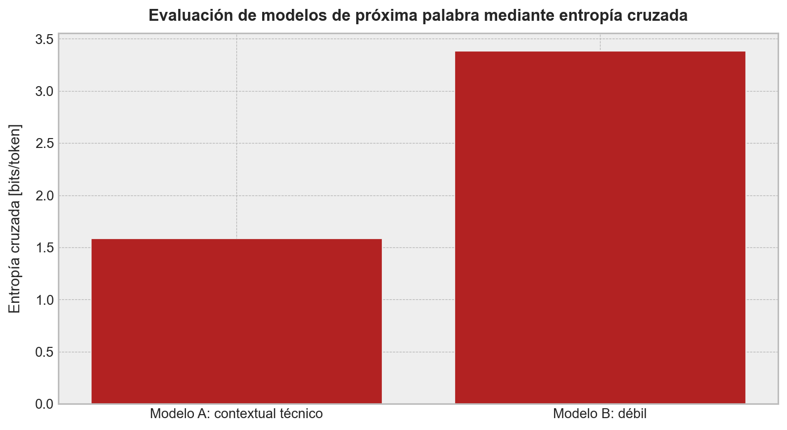
El modelo A obtiene menor entropía cruzada porque asigna mayor probabilidad a los tokens efectivamente observados. En cambio, el modelo B se sorprende más ante la misma secuencia de frases, por lo que su costo promedio de codificación es mayor.
Este ejemplo anticipa el concepto de perplejidad, que estudiaremos a continuación. La perplejidad es una transformación exponencial de la entropía cruzada por token, y puede interpretarse como el número efectivo de alternativas plausibles que el modelo considera en cada paso de predicción. ◼︎
Perplejidad
La perplejidad es una de las métricas más utilizadas para evaluar modelos probabilísticos secuenciales, especialmente modelos de lenguaje. Su importancia proviene de que transforma la entropía cruzada promedio en una cantidad más interpretable: El número efectivo de alternativas que el modelo considera plausibles en cada paso de predicción.
Anteriormente vimos que, si una muestra \(x_{1},x_{2},\dots,x_{m}\) proviene de una distribución real \(p\), y un modelo probabilístico \(q\) asigna probabilidad \(q(x_{i})\) a cada observación, entonces la entropía cruzada empírica viene dada por
\[ \widehat{H}(p,q) =-\frac{1}{m} \sum_{i=1}^{m} \log(q(x_i)) \tag{3.114} \]
La perplejidad se define como la exponencial de esta entropía cruzada promedio. Si usamos logaritmo natural, escribimos
\[ \mathrm{PPL}(p,q)= \exp\left(\widehat{H}(p,q)\right) \tag{3.115} \]
Si usamos logaritmo en base \(2\), entonces la definición equivalente es
\[ \mathrm{PPL}(p,q)=2^{\widehat{H}_2(p,q)} \tag{3.116} \]
El subíndice en \(\widehat{H}_2\) recuerda que la entropía cruzada está medida en bits. En general, si la entropía cruzada se calcula con logaritmo en base \(b\), entonces
\[ \mathrm{PPL}(p,q)=b^{\widehat{H}_b(p,q)} \tag{3.117} \]
Esta definición tiene una interpretación directa. Si \(\mathrm{PPL}=10\), entonces el modelo se comporta, en promedio, como si en cada paso de predicción estuviera eligiendo entre \(10\) alternativas igualmente plausibles. Esta interpretación no significa que el modelo realmente asigne la misma probabilidad a \(10\) tokens; más bien, la perplejidad traduce una distribución posiblemente desigual a un número efectivo de alternativas.
La perplejidad también puede expresarse directamente en términos de las probabilidades asignadas a las observaciones. Sustituyendo (3.114) en (3.115), se obtiene
\[ \mathrm{PPL}(p,q) =\exp\left( -\frac{1}{m} \sum_{i=1}^{m}\log(q(x_i))\right) \tag{3.118} \]
Usando propiedades de los logaritmos, la expresión anterior puede reescribirse como
\[ \mathrm{PPL}(p,q)=\left(\prod_{i=1}^{m}q(x_{i})\right)^{-1/m} \tag{3.119} \]
Es decir, la perplejidad es el inverso de la media geométrica de las probabilidades que el modelo asigna a los eventos efectivamente observados. Por lo tanto, un modelo que asigna alta probabilidad a las observaciones reales tendrá baja perplejidad; un modelo que asigna baja probabilidad a las observaciones reales tendrá alta perplejidad.
Esta relación deja en evidencia que minimizar la perplejidad es equivalente a minimizar la entropía cruzada empírica, y también equivalente a maximizar la verosimilitud promedio del modelo sobre los datos observados. En efecto, como la función exponencial es estrictamente creciente, minimizar \(\widehat{H}(p,q)\) y minimizar \(\mathrm{PPL}(p,q)\) son problemas de optimización equivalentes.
Perplejidad de una fuente discreta
Antes de discutir aspectos de la perplejidad asociados a los modelos de lenguaje, conviene mirar el caso más simple: Una fuente discreta (de información) con distribución real \(p\). Si no estamos comparando contra un modelo aproximado \(q\), sino que usamos la propia distribución real \(p\), la perplejidad de la fuente se define como
\[ \mathrm{PPL}(X)=2^{H_{2}(X)} \tag{3.120} \]
cuando la entropía se mide en bits. En ese caso, la perplejidad puede interpretarse como el número efectivo de estados equiprobables que generarían el mismo nivel de incertidumbre que la distribución original. Por ejemplo, si \(X\) sigue una distribución uniforme sobre \(K\) estados, entonces
\[ H_2(X)=\log_2(K) \tag{3.121} \]
por lo que
\[ \mathrm{PPL}(X)=2^{\log_2(K)}=K \tag{3.122} \]
Este resultado confirma que, para una fuente uniforme, la perplejidad coincide exactamente con el número de alternativas posibles. Para distribuciones no uniformes, la perplejidad será menor que el número total de estados, porque algunos eventos concentran más probabilidad de ocurrencia que otros.
Ejemplo 3.13 – Perplejidad como número efectivo de alternativas: Consideremos tres distribuciones sobre un vocabulario de cinco tokens. La primera es uniforme, la segunda es moderadamente concentrada y la tercera es altamente concentrada:
# Tres distribuciones sobre un vocabulario de cinco tokens.
token_distributions = {
"Uniforme": np.array([0.20, 0.20, 0.20, 0.20, 0.20]),
"Moderadamente concentrada": np.array([0.50, 0.20, 0.15, 0.10, 0.05]),
"Altamente concentrada": np.array([0.85, 0.05, 0.04, 0.03, 0.03]),
}
ppl_rows = []
for name, p in token_distributions.items():
H_bits = entropy_discrete(p, base=2)
ppl = 2 ** H_bits
ppl_rows.append({
"Distribución": name,
"Entropía [bits]": H_bits,
"Perplejidad": ppl,
"Nº tokens posibles": len(p)
})
# Llevamos a formato de DataFrame y mostramos los resultados.
ppl_df = pd.DataFrame(ppl_rows)
ppl_df| Distribución | Entropía [bits] | Perplejidad | Nº tokens posibles | |
|---|---|---|---|---|
| 0 | Uniforme | 2.321928 | 5.000000 | 5 |
| 1 | Moderadamente concentrada | 1.923220 | 3.792685 | 5 |
| 2 | Altamente concentrada | 0.904680 | 1.872129 | 5 |
# Visualizamos el número efectivo de alternativas conforme la perplejidad.
fig, ax = plt.subplots(figsize=(9, 5))
ax.bar(
ppl_df["Distribución"],
ppl_df["Perplejidad"],
color="firebrick"
)
ax.axhline(
y=5,
linestyle="--",
linewidth=1.5,
color="k",
label="Vocabulario total = 5 tokens"
)
ax.set_ylabel(
"Perplejidad",
fontsize=12,
labelpad=10
)
ax.set_title(
"La perplejidad mide el número efectivo de alternativas",
fontsize=13,
fontweight="bold",
pad=10
)
ax.legend(loc="best", frameon=True)
plt.tight_layout()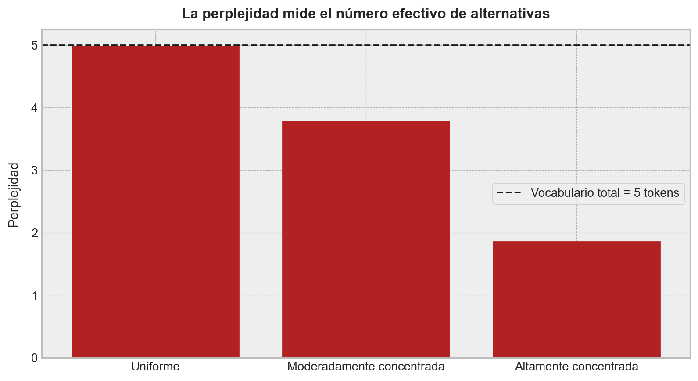
La distribución uniforme tiene perplejidad igual a \(5\), porque todos los tokens son igualmente plausibles. En cambio, cuando la probabilidad se concentra en pocos tokens, la perplejidad disminuye: Aunque el vocabulario siga teniendo cinco alternativas posibles, el número efectivo de alternativas plausibles es menor. ◼︎
El caso de los modelos de lenguaje
En procesamiento de lenguaje natural, la perplejidad se usa para evaluar modelos que asignan probabilidades a secuencias de tokens. Sea \(w_{1},w_{2},\dots,w_{T}\) una secuencia observada. Por la regla de la cadena de probabilidades, un modelo de lenguaje asigna probabilidad conjunta
\[ q(w_{1},w_{2},\dots,w_{T})=\prod_{t=1}^{T}q(w_t|w_1,\dots,w_{t-1}). \tag{3.123} \]
La entropía cruzada empírica por token queda dada por
\[ \widehat{H}(p,q)=-\frac{1}{T}\sum_{t=1}^{T} \log q(w_t|w_1,\dots,w_{t-1}) \tag{3.124} \]
Por lo tanto, la perplejidad del modelo sobre la secuencia observada es
\[ \mathrm{PPL}=\exp\left(- \frac{1}{T} \sum_{t=1}^{T}\log q(w_t|w_1,\dots,w_{t-1})\right) \tag{3.125} \]
Equivalentemente,
\[ \mathrm{PPL} = \left[\prod_{t=1}^{T}q(w_t|w_1,\dots,w_{t-1})\right]^{-1/T} \tag{3.126} \]
La normalización por \(T\) es esencial. Sin ella, secuencias más largas tendrían peor puntuación simplemente porque contienen más factores probabilísticos. La perplejidad permite comparar modelos sobre corpus de distinto tamaño siempre que el protocolo de evaluación y la tokenización sean equivalentes.
Esto último resulta especialmente importante. La perplejidad depende de la unidad de tokenización. No es directamente comparable una perplejidad calculada a nivel de palabras con otra calculada a nivel de sub-palabras, caracteres o tokens generados por un tokenizador distinto. Cambiar la granularidad de los tokens cambia el número de pasos de predicción y, por tanto, la interpretación de la métrica.
Relación entre perplejidad, KL y error de modelamiento
La perplejidad no sólo es una transformación de la entropía cruzada; también hereda su descomposición en términos de entropía real y divergencia de Kullback-Leibler. Recordemos que
\[ H(p,q)=H(p)+D_{KL}(p\|q) \tag{3.127} \]
Al aplicar la transformación exponencial, obtenemos
\[ \mathrm{PPL}(p,q)= 2^{H_2(p,q)}= 2^{H_2(p)}2^{D_{KL,2}(p\|q)} \tag{3.128} \]
Esta ecuación separa dos efectos:
- \(2^{H_2(p)}\) representa la perplejidad irreducible de la fuente real. Es el nivel de incertidumbre que ningún modelo puede eliminar.
- \(2^{D_{KL,2}(p\|q)}\) representa el costo multiplicativo asociado al desajuste entre el modelo \(q\) y la distribución real \(p\).
Así, un modelo puede tener alta perplejidad por dos razones distintas. La primera es que la fuente real sea intrínsecamente incierta. La segunda es que el modelo esté mal especificado y asigne probabilidades pobres a los eventos observados. En evaluación de modelos, lo segundo es lo que buscamos reducir.
También se desprende que
\[\mathrm{PPL}(p,q)\geq \mathrm{PPL}(p) \tag{3.129} \]
con igualdad si y sólo si \(q=p\) casi en todas partes. Es decir, la perplejidad mínima posible se alcanza cuando el modelo reproduce exactamente la distribución real.
Perplejidad infinita y suavizamiento
Un detalle técnico importante ocurre cuando el modelo asigna probabilidad nula a un evento observado. Si existe un token observado \(w_t\) tal que
\[ q(w_t|w_1,\dots,w_{t-1})=0 \tag{3.130} \]
entonces
\[ -\log q(w_t|w_1,\dots,w_{t-1})=+\infty \tag{3.131} \]
Por lo tanto, tanto la entropía cruzada empírica como la perplejidad se vuelven infinitas. En modelos clásicos de lenguaje, esto motiva el uso de técnicas de suavizamiento (smoothing) o regularización, cuyo objetivo es evitar probabilidades exactamente nulas para eventos posibles, aunque no hayan sido observados en el conjunto de entrenamiento.
En modelos modernos basados en redes neuronales, la capa de salida tipo softmax asigna probabilidades estrictamente positivas a todos los tokens del vocabulario, por lo que este problema se evita de manera natural, al menos dentro del vocabulario definido por el tokenizador.
Ejemplo 3.14 – Perplejidad de modelos de próxima palabra: Continuemos con el ejemplo anterior de entropía cruzada en predicción de próximas palabras. Allí definimos dos modelos ficticios: Un modelo A, más consistente con el dominio técnico del corpus, y un modelo B, más débil. Si ya calculamos las entropías cruzadas empíricas \(H_{A}\) y \(H_{B}\) en bits por token, entonces sus perplejidades se obtienen directamente como
\[ \mathrm{PPL}_A=2^{H_A}, \qquad \mathrm{PPL}_B=2^{H_B} \tag{3.132} \]
Implementemos esto en Python:
# Perplejidad a partir de entropía cruzada en bits/token.
PPL_A = 2 ** H_A
PPL_B = 2 ** H_B
ppl_lm_df = pd.DataFrame({
"Modelo": ["Modelo A: contextual técnico", "Modelo B: débil"],
"Entropía cruzada [bits/token]": [H_A, H_B],
"Perplejidad [tokens efectivos]": [PPL_A, PPL_B]
})
ppl_lm_df| Modelo | Entropía cruzada [bits/token] | Perplejidad [tokens efectivos] | |
|---|---|---|---|
| 0 | Modelo A: contextual técnico | 1.586123 | 3.002415 |
| 1 | Modelo B: débil | 3.384947 | 10.446497 |
fig, ax = plt.subplots(figsize=(9, 5))
ax.bar(
ppl_lm_df["Modelo"],
ppl_lm_df["Perplejidad [tokens efectivos]"],
color="firebrick"
)
ax.set_ylabel(
"Perplejidad",
fontsize=12,
labelpad=10
)
ax.set_title(
"Perplejidad de dos modelos para predecir una próxima palabra",
fontsize=13,
fontweight="bold",
pad=10
)
plt.tight_layout()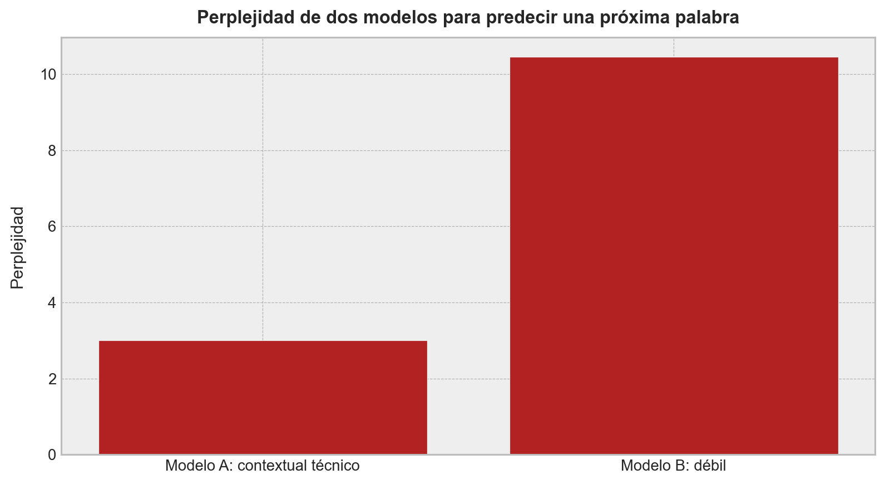
El modelo A obtiene menor perplejidad porque asigna mayor probabilidad promedio a los tokens observados. Si, por ejemplo, su perplejidad fuera cercana a \(4\), podríamos interpretarlo como un modelo que, en promedio, se comporta como si eligiera entre cuatro tokens plausibles por contexto. Si el modelo B tuviera perplejidad cercana a \(12\), entonces se comportaría como si enfrentara un conjunto efectivo de doce alternativas por contexto.
Esta interpretación es útil porque traduce una pérdida logarítmica, que puede ser abstracta, a una escala más cercana a la idea de alternativas plausibles. Sin embargo, debe recordarse que la perplejidad no mide calidad semántica profunda, coherencia global ni utilidad conversacional. Sólo mide qué probabilidad asigna el modelo a los tokens observados bajo un protocolo de evaluación específico. ◼︎
Ejemplo 3.15 – Perplejidad por frase y diagnóstico de dificultad local: La perplejidad promedio de un corpus resume el desempeño global de un modelo, pero también podemos calcular perplejidad por frase. Esto permite identificar qué frases resultan más difíciles para un modelo de lenguaje.
Usaremos las mismas observaciones contexto-token del ejemplo anterior, pero las agruparemos por frase. Para cada frase, calcularemos
\[ \mathrm{PPL}(s) = \exp\left( - \frac{1}{T_{s}} \sum_{t=1}^{T_{s}} \log q(w_{t}|w_{<t}) \right), \tag{3.133} \]
donde \(T_{s}\) es el número de tokens evaluados en la frase \(s\).
# Frases con probabilidades asignadas por dos modelos ficticios.
sentence_prob_data = [
{
"Frase": "el molino procesa mineral duro",
"Probabilidades Modelo A": [0.42, 0.35, 0.48, 0.40],
"Probabilidades Modelo B": [0.12, 0.10, 0.15, 0.08],
},
{
"Frase": "la red neuronal aprende patrones",
"Probabilidades Modelo A": [0.38, 0.44, 0.31, 0.36],
"Probabilidades Modelo B": [0.14, 0.09, 0.12, 0.10],
},
{
"Frase": "el modelo predice la siguiente palabra",
"Probabilidades Modelo A": [0.40, 0.37, 0.22, 0.30, 0.34],
"Probabilidades Modelo B": [0.12, 0.13, 0.06, 0.07, 0.09],
},
{
"Frase": "la planta ajusta el tonelaje",
"Probabilidades Modelo A": [0.32, 0.28, 0.26, 0.33],
"Probabilidades Modelo B": [0.10, 0.07, 0.08, 0.11],
},
]# Definimos algunas funciones auxiliares para simplificar nuestro trabajo.
def empirical_cross_entropy_from_probs_nats(probs):
"""
Entropía cruzada empírica usando logaritmo natural.
"""
probs = np.asarray(probs, dtype=float)
return -np.mean(np.log(probs))
def perplexity_from_probs(probs):
"""
Perplejidad a partir de las probabilidades asignadas
a los tokens observados.
"""
return np.exp(empirical_cross_entropy_from_probs_nats(probs))sentence_ppl_rows = []
for row in sentence_prob_data:
probs_A = row["Probabilidades Modelo A"]
probs_B = row["Probabilidades Modelo B"]
sentence_ppl_rows.append({
"Frase": row["Frase"],
"PPL Modelo A": perplexity_from_probs(probs_A),
"PPL Modelo B": perplexity_from_probs(probs_B),
"CE Modelo A [nats/token]": empirical_cross_entropy_from_probs_nats(probs_A),
"CE Modelo B [nats/token]": empirical_cross_entropy_from_probs_nats(probs_B),
})
sentence_ppl_df = pd.DataFrame(sentence_ppl_rows)
sentence_ppl_df| Frase | PPL Modelo A | PPL Modelo B | CE Modelo A [nats/token] | CE Modelo B [nats/token] | |
|---|---|---|---|---|---|
| 0 | el molino procesa mineral duro | 2.439750 | 9.128709 | 0.891896 | 2.211424 |
| 1 | la red neuronal aprende patrones | 2.705670 | 9.018038 | 0.995350 | 2.199227 |
| 2 | el modelo predice la siguiente palabra | 3.131433 | 11.114162 | 1.141491 | 2.408220 |
| 3 | la planta ajusta el tonelaje | 3.377156 | 11.287683 | 1.217034 | 2.423712 |
fig, ax = plt.subplots(figsize=(9, 5))
x_pos = np.arange(len(sentence_ppl_df))
width = 0.36
ax.bar(
x_pos - width / 2,
sentence_ppl_df["PPL Modelo A"],
width=width,
label="Modelo A"
)
ax.bar(
x_pos + width / 2,
sentence_ppl_df["PPL Modelo B"],
width=width,
label="Modelo B"
)
ax.set_xticks(x_pos)
#ax.set_xticklabels(sentence_ppl_df["Frase"], rotation=25, ha="right")
ax.set_ylabel(
"Perplejidad por frase",
fontsize=12,
labelpad=10
)
ax.set_title(
"Diagnóstico local de dificultad mediante perplejidad por frase",
fontsize=13,
fontweight="bold",
pad=10
)
ax.legend(loc="best", frameon=True)
plt.tight_layout()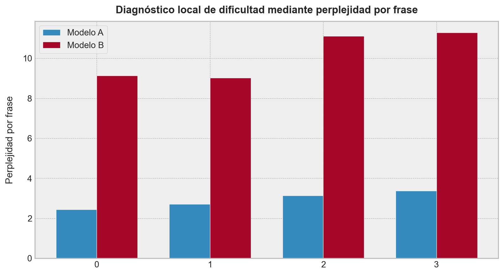
La perplejidad por frase permite observar que el desempeño del modelo no es necesariamente homogéneo en todo el corpus. Algunas frases pueden resultar fáciles porque contienen combinaciones muy esperadas, como expresiones técnicas frecuentes. Otras pueden ser más difíciles porque combinan términos menos predecibles, contienen transiciones menos frecuentes o requieren mayor contexto.
Este tipo de análisis es útil porque la perplejidad global puede ocultar variabilidad interna. Dos modelos pueden tener perplejidad promedio similar, pero comportarse de manera muy distinta por dominio, tipo de frase, longitud, registro lingüístico o rareza léxica. Por ello, en aplicaciones reales de NLP, la perplejidad debe entenderse como una métrica de evaluación probabilística, no como una garantía completa de calidad lingüística. ◼︎
Vemos pues que la perplejidad es atractiva porque convierte una pérdida logarítmica promedio en una escala interpretable. En vez de decir que un modelo tiene una entropía cruzada de \(3.5\) bits por token, podemos decir que su perplejidad es aproximadamente \(2^{3.5}\approx 11.31\), lo que sugiere un número efectivo de once alternativas plausibles por token.
Sin embargo, esta métrica debe usarse con cuidado. Primero, sólo es comparable entre modelos evaluados sobre el mismo corpus, con el mismo tokenizador y bajo el mismo protocolo. Segundo, una menor perplejidad no siempre implica mejor desempeño en tareas posteriores, como responder preguntas, seguir instrucciones, razonar o generar texto útil. Tercero, la perplejidad evalúa probabilidad asignada a secuencias observadas, pero no evalúa directamente veracidad, coherencia global, seguridad ni adecuación pragmática.
Aun así, como concepto de teoría de la información, la perplejidad cierra de manera elegante el recorrido iniciado con la entropía. La entropía mide incertidumbre promedio; la entropía cruzada mide sorpresa promedio bajo un modelo aproximado; y la perplejidad transforma esa sorpresa promedio en un número efectivo de alternativas. Por eso, en modelos de lenguaje, la perplejidad es una de las formas más naturales de conectar probabilidad, codificación e incertidumbre secuencial.
Ejemplo 3.16 – Perplejidad como escala local en t-SNE: La perplejidad no aparece solamente en la evaluación de modelos de lenguaje. También juega un rol central en algunos algoritmos de reducción dimensional, en particular, como es el caso del algoritmo t-SNE (que es un acrónimo de encaje estocástico de vecinos con distribución \(t\), del inglés t-distributed stochastic neighbor embedding),que a su vez corresponde a uno de los más emblemáticos algoritmos de aprendizaje de variedades (o manifold learning).
La idea general del algoritmo t-SNE es tomar datos de alta dimensión y construir una representación en dos dimensiones que preserve, en lo posible, las relaciones de vecindad local (o, esencialmente, preservar relaciones morfológicas en la representación reducida de los datos originales). Dicho de forma simple: Si dos puntos están cerca en el espacio original, el algoritmo t-SNE intenta que también queden cerca en la representación bidimensional resultante.
Para ello, el algoritmo transforma las distancias entre puntos en probabilidades. Si \(\mathbf{x}_i\) y \(\mathbf{x}_j\) son dos observaciones en el espacio original, se define una probabilidad condicional de vecindad de la forma
\[ p_{j|i} = \frac{ \exp\left( -\frac{\|\mathbf{x}_i-\mathbf{x}_j\|^2}{2\sigma_i^2} \right) } { \sum_{k\neq i} \exp\left( -\frac{\|\mathbf{x}_i-\mathbf{x}_k\|^2}{2\sigma_i^2} \right) }, \qquad j\neq i \tag{3.134} \]
Esta expresión asigna mayor probabilidad a los puntos cercanos a \(\mathbf{x}_i\) y menor probabilidad a los puntos lejanos. El parámetro \(\sigma_{i}\) controla el ancho local del vecindario. De esta manera, si \(\sigma_{i}\) es pequeño, sólo unos pocos puntos cercanos tendrán probabilidad relevante; si \(\sigma_{i}\) es grande, el vecindario será más amplio.
Aquí aparece la perplejidad. Para cada punto \(\mathbf{x}_{i}\), el algoritmo t-SNE escoge \(\sigma_{i}\) de manera tal que la distribución condicional \(P_i =\{p_{j|i}:j\neq i\}\) tenga una perplejidad fijada por el usuario, digamos \(\mathrm{PPL}(P_i) =2^{H(P_i)}\), donde
\[ H(P_{i}) = -\sum_{j\neq i} p_{j|i}\log_2(p_{j|i}). \tag{3.135} \]
Por lo tanto, la perplejidad en el algoritmo t-SNE puede interpretarse como el número efectivo de vecinos que cada punto considera. Por ejemplo, una perplejidad cercana a \(5\) fuerza vecindarios muy locales; una perplejidad cercana a \(30\) considera vecindarios más amplios.
Luego, el algoritmo construye una representación bidimensional \(\mathbf{z}_{1},\dots,\mathbf{z}_{n}\in\mathbb{R}^2\) y define otra distribución de probabilidades, ahora en el espacio reducido. En términos generales, el objetivo es que las probabilidades de vecindad en baja dimensión se parezcan lo más posible a las probabilidades de vecindad en alta dimensión.
La función objetivo del algoritmo t-SNE se escribe conforme la divergencia de Kullback-Leibler como
\[ C=D_{KL}(P\|Q)= \sum_{i} \sum_{j} p_{ij}\log \left(\frac{p_{ij}}{q_{ij}}\right) \tag{3.136} \]
De esta manera, el algoritmo t-SNE une tres conceptos desarrollados previamente:
- Usa entropía para medir la incertidumbre de cada vecindario local.
- Usa perplejidad para fijar el número efectivo de vecinos.
- Usa divergencia KL para ajustar el mapa bidimensional.
Veamos un ejemplo aplicado a frases completas. Construiremos un pequeño corpus con frases de distintos dominios: Minería, analítica/NLP y frases poéticas o cotidianas. Luego representaremos cada frase mediante un proceso de vectorización y usaremos y usaremos el algoritmo t-SNE para proyectarlas a dos dimensiones.
Para el proceso de vectorización de las frases utilizaremos la clase TfidfVectorizer, provista por Scikit-Learn, y que convierte una colección de documentos de texto en una matriz numérica usando un esquema denominado TF-IDF (del inglés term frequency–inverse document frequency), cuya idea es asignar mayor peso a las palabras que son frecuentes dentro de una frase o documento, pero que no aparecen en todos los documentos del corpus. En otras palabras, una palabra recibe un peso alto si ayuda a distinguir una frase de las demás. Por ejemplo, en un corpus mixto, palabras como "molino", "mineral", "gradiente" o "poesía" podrían ser más informativas que palabras funcionales (o conectores) como "el", "la" o "de".
En términos simples, TfidfVectorizer realiza tres tareas:
- Tokeniza cada frase.
- Construye un vocabulario con los términos observados.
- Representa cada frase como un vector numérico cuyas entradas corresponden a pesos TF-IDF.
Así, una frase como “el molino sag procesa mineral duro” deja de ser una secuencia de caracteres y pasa a ser un vector en un espacio de dimensión igual al tamaño del vocabulario del corpus.
Luego usamos TSNE, también de Scikit-Learn, que implementa el algoritmo t-SNE. La lógica de TSNE no es preservar distancias globales exactas, sino vecindarios locales. Es decir, intenta que frases similares en el espacio TF-IDF queden cerca en el mapa bidimensional. Por esta razón el algoritmo t-SNE se usa principalmente como herramienta de visualización exploratoria.
En nuestro ejemplo, el flujo completo es \(\text{frases} \longrightarrow \text{vectores TF-IDF} \longrightarrow \text{mapa 2D con t-SNE}\). La conexión con la perplejidad aparece en la prácticºa porque TSNE usa el parámetro perplexity para controlar cuántos vecinos efectivos considera alrededor de cada punto. Una perplejidad baja produce vecindarios muy locales; una perplejidad alta hace que el algoritmo considere vecindarios más amplios.
Procedemos pues con la implementación:
from sklearn.feature_extraction.text import TfidfVectorizer
from sklearn.manifold import TSNE# Corpus pequeño con frases completas.
sentences = [
"el molino sag procesa mineral duro durante el turno de noche",
"la planta ajusta el tonelaje cuando cambia la dureza del mineral",
"el chancador primario alimenta mineral hacia el stockpile intermedio",
"la correa transporta mineral desde el chancador hacia la planta",
"el operador controla la potencia del molino y la presión de carga",
"la recuperación metalúrgica depende de la ley de cobre y la granulometría",
"el sistema experto recomienda setpoints para maximizar el throughput",
"la detención del chancador reduce la alimentación hacia molienda",
"el modelo predictivo estima el tonelaje esperado del molino",
"la red neuronal aprende patrones no lineales desde los datos",
"el algoritmo optimiza la función objetivo con gradiente descendente",
"el modelo de lenguaje predice la siguiente palabra de una frase",
"la información mutua detecta dependencia entre variables del modelo",
"la entropía cruzada penaliza probabilidades mal asignadas",
"la perplejidad evalúa la incertidumbre efectiva del modelo",
"el embedding representa tokens en un espacio vectorial continuo",
"la guitarra acompaña una canción tranquila junto al mar",
"la poesía describe la noche lenta sobre la ciudad",
"el viajero observa la lluvia caer sobre el camino",
"la memoria guarda imágenes antiguas de la infancia",
"el silencio cubre la casa cuando termina la música",
"el jardín despierta lentamente bajo la luz de la mañana",
"la brisa mueve las hojas cerca de la ventana",
"la luna aparece detrás de los cerros al anochecer",
]
labels = (
["Minería"] * 8
+ ["Analítica / NLP"] * 8
+ ["Poético / cotidiano"] * 8
)# Implementamos una estrategia de vectorización TF-IDF.
vectorizer = TfidfVectorizer()
X_tfidf = vectorizer.fit_transform(sentences)
# Convertimos a arreglo denso para t-SNE.
X_dense = X_tfidf.toarray()
# Mostramos la geometría del arreglo.
X_dense.shape(24, 142)A continuación definimos una rutina funcional para la implementación del algoritmo t-SNE:
def run_tsne(X, perplexity, random_state=42):
"""
Ejecuta el algoritmo t-SNE manejando diferencias entre versiones de Scikit-Learn.
"""
try:
tsne = TSNE(
n_components=2,
perplexity=perplexity,
learning_rate="auto",
init="random",
max_iter=1500,
random_state=random_state
)
except TypeError:
tsne = TSNE(
n_components=2,
perplexity=perplexity,
learning_rate="auto",
init="random",
n_iter=1500,
random_state=random_state
)
return tsne.fit_transform(X)Ahora implementamos el algoritmo con tres alternativas de perplejidad:
# Probamos tres valores de perplejidad.
perplexities = [3, 7, 12]
tsne_results = {
perp: run_tsne(X_dense, perplexity=perp, random_state=42)
for perp in perplexities
}# Definimos una paleta simple por grupo.
label_to_marker = {
"Minería": "o",
"Analítica / NLP": "s",
"Poético / cotidiano": "^"
}
label_to_color = {
"Minería": "firebrick",
"Analítica / NLP": "dodgerblue",
"Poético / cotidiano": "goldenrod"
}
# Y visualizamos los resultados obtenidos.
for perp, Z in tsne_results.items():
fig, ax = plt.subplots(figsize=(9, 6))
for group in sorted(set(labels)):
idx = np.array(labels) == group
ax.scatter(
Z[idx, 0],
Z[idx, 1],
s=70,
alpha=0.85,
marker=label_to_marker[group],
color=label_to_color[group],
label=group
)
ax.set_title(
f"t-SNE de frases completas con perplejidad = {perp}",
fontsize=13,
fontweight="bold",
pad=10
)
ax.set_xlabel(r"Componente t-SNE 1", fontsize=12, labelpad=10)
ax.set_ylabel(r"Componente t-SNE 2", fontsize=12, labelpad=10)
ax.legend(loc="best", frameon=True, fontsize=10)
plt.tight_layout()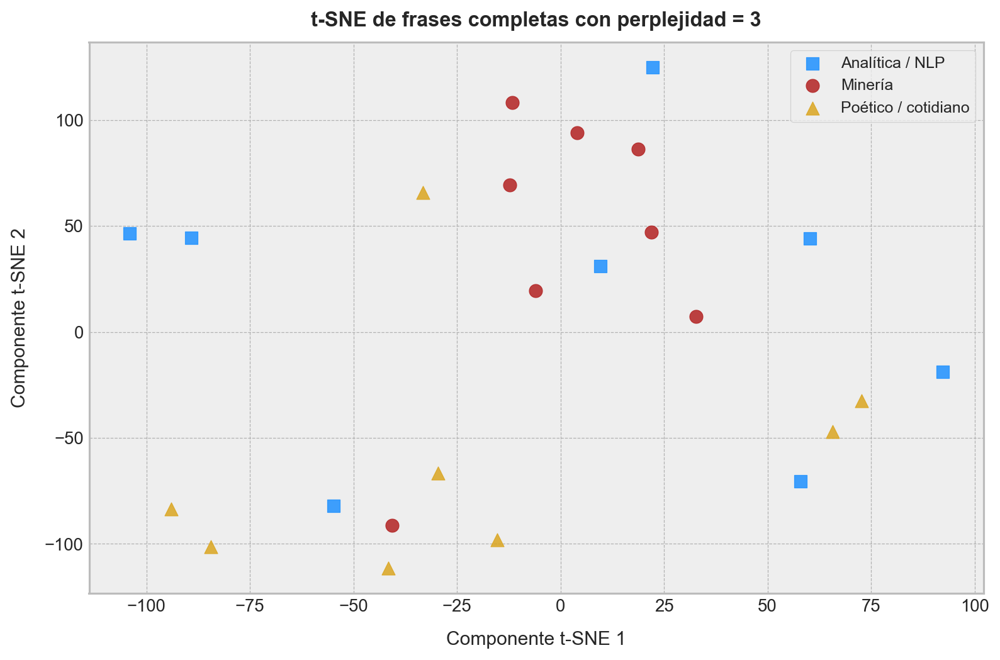
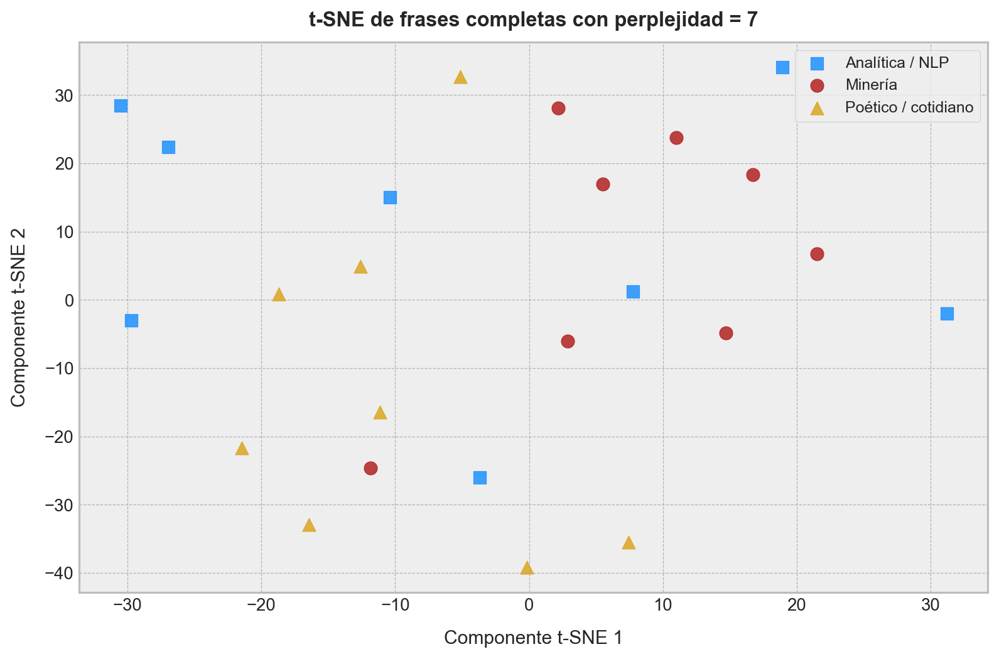
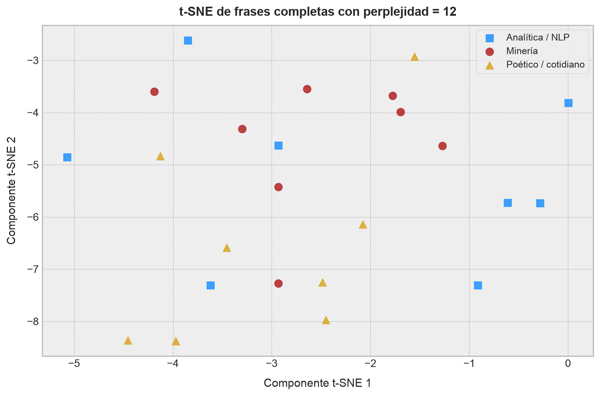
Este resultado debe interpretarse con cuidado, ya que el algoritmo t-SNE no construye un modelo predictivo ni estima una probabilidad de ocurrencia de la próxima palabra. En cambio, construye un mapa bidimensional que intenta preservar relaciones locales entre frases. Y en ese resultado, la perplejidad controla la escala de esas relaciones locales:
- Con perplejidad baja, el algoritmo se concentra en vecindarios muy pequeños. Esto puede separar grupos locales con fuerza, pero también puede fragmentar estructuras globales.
- Con perplejidad alta, el algoritmo considera vecindarios más amplios. Esto puede entregar una visión más estable del conjunto, pero puede suavizar diferencias locales.
- En ambos casos, la perplejidad actúa como un número efectivo de vecinos relevantes.
En este ejercicio, cada frase fue representada mediante una vectorización de tipo TF-IDF, de modo que frases con vocabulario parecido tienden a quedar más cerca en el espacio original. El algoritmo t-SNE toma esa geometría de alta dimensión y la traduce a una visualización bidimensional. Si el corpus tiene estructura semántica clara, esperaríamos ver cierta separación entre frases mineras, frases analíticas y frases poéticas.
Desde la perspectiva de teoría de la información, este ejemplo es valioso porque muestra que la perplejidad no es sólo una métrica final para evaluar modelos de lenguaje. También puede usarse como una forma de controlar la incertidumbre local de una distribución de vecindad. En modelos de lenguaje, la pregunta es: “¿cuántas palabras plausibles considera el modelo?”. En el algoritmo t-SNE, la pregunta es: “¿cuántos vecinos plausibles considera cada punto?”. La fórmula es la misma: Una entropía transformada exponencialmente para obtener un número efectivo de alternativas. ◼︎
Comentarios finales
Podemos observar que la teoría de la información no es sólo un conjunto de definiciones sueltas, sino que conforma un relato matemático muy coherente. Todo comienza con la idea de sorpresa asociada a un evento improbable, continúa con la entropía como incertidumbre promedio, se expande hacia la información mutua y la divergencia de Kullback-Leibler, y termina en cantidades directamente utilizables para evaluar modelos, como la entropía cruzada y la perplejidad. Una de los mayores hallazgos es precisamente esa continuidad conceptual: Cada noción nueva no reemplaza a la anterior, sino que la prolonga y la vuelve más operativa.
Hemos intentado no limitarnos a definir objetos, sino que a mostrar con claridad cómo se relacionan entre sí. La información mutua queda reinterpretada como una divergencia KL entre la distribución conjunta y el producto de las marginales, mientras que la entropía cruzada se descompone naturalmente como entropía real más costo de desajuste entre modelo y distribución verdadera. Luego, la perplejidad aparece como una transformación de esa sorpresa promedio a una escala mucho más interpretable. Esa red de equivalencias le da nuestro entendimiento una profundidad razonable, ya que no sólo aprendemos conceptos, sino también la arquitectura interna que los conecta.
Hemos intentado no caer en la tentación de presentar todas las cantidades informacionales como si fueran idénticas en sentido conceptual. Por el contrario, hemos tratado de distinguir con precisión entre entropía discreta y entropía diferencial, subrayando la dependencia de escala en el caso continuo, y más adelante adviertiendo que la perplejidad depende de la tokenización y no debe leerse como una garantía global de calidad lingüística. Ese tipo de matices fortalece mucho nuestro aprendizaje, porque lo vuelve más riguroso y, al mismo tiempo, más honesto frente a sus aplicaciones.
Finalmente, hemos hecho el esfuerzo de insertar la teoría de Shannon en problemas contemporáneos de aprendizaje automático sin forzar la conexión. La selección de atributos mediante información mutua, la interpretación de la divergencia KL como costo de modelamiento, la lectura de la entropía cruzada como log-loss y el uso de perplejidad en modelos de lenguaje muestran que esta teoría no es sólo un capítulo histórico de la probabilidad, sino un lenguaje vigente para pensar clasificación, predicción, codificación y evaluación de modelos probabilísticos. En ese sentido, queremos que este apunte funcione como una bisagra entre fundamentos probabilísticos y modelamiento moderno.